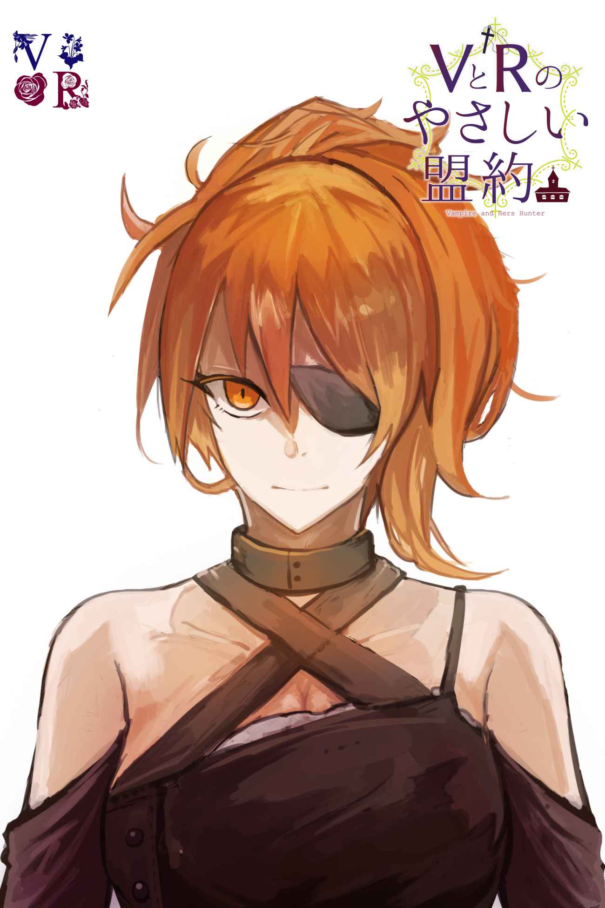
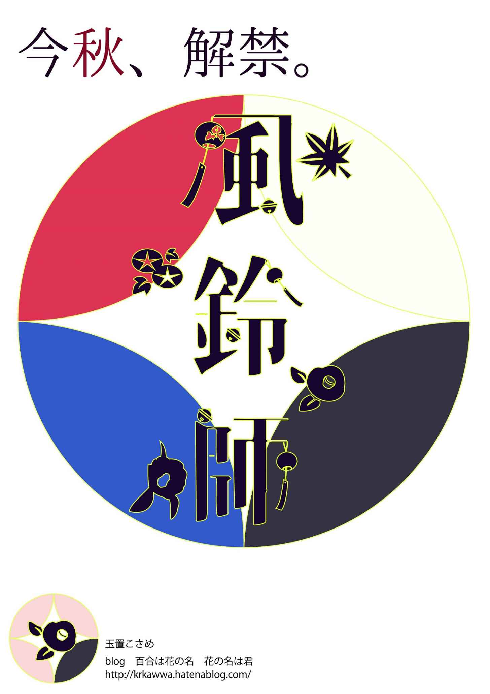

| ＶとＲのやさしい盟約 Ｖ＆Ｒシリーズ (甘辛文庫) | |
| 玉置 こさめ | |
| (2018) | |

どんな子供も吸血鬼について聞かされる言い伝えが三つある。
ひとつ。吸血鬼には女しかいない。
次。彼女らは『暗い森』からやってくる。
最後。それらは母から生まれ母に還る。
吸血鬼は実在する。人々の特徴として平均体温が常人よりも高く、骨を含めた人体組織の回復が異常に早い点や、ごく稀にサイコメトリーが可能といった点が挙げられる。そして身体能力が尋常でない。
南欧の地方の片田舎で育ったその少女が家を追い出されたのは七歳の時だ。ある夜やたらに豪勢な食事が出てきてたらふく食べた。腹いっぱい食べさせてもらえるのも好物ばかり出てくるのも初めてのことだった。あまりの幸福にぐっすりと眠りに落ちた。起きたらもう馬車の上で似たような子供たちが他にも何人か乗っていた。つまりそれは『最後の晩餐』のご馳走だったのだと気付いた。道中、馬の御者は口減らしに売られた子供たちを馬車に乗せられるだけ乗せていった。乗せられてくる子らはみんな女だった。
だが、少女は知っていた。悪い噂の立つ隣人が言っていた。それは貴族の娼婦の館にさらわれて散々ひどい仕打ちを受けた挙句に気がおかしくなって戻されたという噂だ。彼女は、村人たちから避けられている。けれど少女のことをよくかわいがってくれたし、少女といる時は良識ある大人として振舞うことができた。村人に正気だと悟られれば、もっと過酷なところにまた売られるか、不吉な存在として始末される。だからそのように振舞っているだけだった。彼女は教えてくれた。『森』に連れて行かれれば吸血鬼になる。けれど、『城』に連れて行かれれば狩る側になる。
まだ七歳だったルジャにそう教えてくれた。ルジャは吸血鬼になりたくなかった。だから、馬車のうちで必死に祈った。この場所が城につくように。暗くて狭い馬車の中ですすり泣く子もいれば、喚き散らす子もいた。けれども御者たちによって様々な手段で黙らされた。ルジャはただ我慢して祈っていた。この場所が城に着くように。ルジャを売った家族はルジャの代わりに札束を抱いて眠る。ルジャはルジャで、貧しさのせいで、いつ殺されるか売られるかにわからない恐怖にもう怯えずに済む。だからそれでいいと思った。祈ることはひとつだ。この先が城でありますように！
君主の威光の届かないその地方で、商人たちは聖職者とその直臣の御用聞きに徹し、民の命も平気で差し出した。国を統べるべき皇帝は空席だ。王様は吸血鬼を駆除できない。ルジャは、それは王様が弱いためだと思っていた。だから自分を乗せた馬車が城に辿りついた時、その時点で忠誠を誓った。この土地を治める領土の長のために吸血鬼を駆除する。その役割を果たすと。信じていた。
まさか、教会の地下に『森』があるなんて思いもせず――
問題の教会は初めてルジャの連れられてきた城の隣にあった。よく考えてみたらわかることだった。どうして気付かなかったんだろう。今夜、その森では梟の声さえしない。その静寂の中央に少女は立っていた。足元には最後の警備兵の死体が転がる。彼女はもう十四歳だった。
「あんたがヴィオレータ？」
尋ねる。堅牢な岩を切り出した教会。その一番奥、客人は絶対に通されない神父の居間だ。だが彼はもう事切れた。ルジャの得意のナイフによって。
居間の近くには階段があり、降りていくと鍵つきの扉がある。頑丈な鍵だ。地下室にそれは囚われていた。家具も絨毯もない。かといって、鎖や錠前つきの檻に放り込まれているわけでもなかった。これは本当に囚われているのだろうか、とルジャは疑問を抱く。脆弱な神父を守る私兵たちは確かに鍛えられていた。だが、たいしたことはなかった。恐らくそれよりも遥かに弱い。自然的な日光に晒されることを畏れて地下にいる、それはわかる。だが逃げられないこともなさそうな、手薄な警備だった。ここが本当にその場所で、それが本当に元凶か？
今目が覚めたと云いたそうに、それは石畳の台の上に身を起こした。ルジャが最後の衛兵の帯剣を失敬し、そのままそいつを斬り捨てるのも見ていた。ただ見ているだけだった。
「あんたが元凶？」
「...いらっしゃい、お客さん。君は誰？」
楽しげにそれはルジャに尋ねた。夜明けの薔薇のような明るいピンクの髪。不吉な紫の瞳。間違いない。こんなに目立つ長い髪の女を間違えるはずがない。聞いていた特徴と一致する。この世の不幸の源だ。ルジャは確信する。
「返事をして。あんたがヴィオレータ・ヴィルトーヂ？」
「初めて会うのに呼び捨てされるのは好きじゃないわ」
吸血鬼は寝起きを邪魔されてむっとしている。前を隠していた布をはらりと落とした。白い胸があらわになって、全部が見えた。
吸血鬼はそのまま後ろ手で枕を払うと、隠されていた持ち手のついたベルを握る。それを鳴らした。リリーン、と空間にベルが響いた。
「誰か来てえ」
間延びした声で呼ぶ。ルジャはぼやいた。無駄だ、と。兵隊はすべて倒してきたのだ。けれども、頭上に雷撃のような衝撃が轟く。天井が軋む。
「衛兵は人だけじゃない。この鐘は同族を呼ぶ道具よ」
繰り返される轟音と衝撃。この地下空間をぶっ壊そうとする勢いの、何かに苛立っているかのような繰り返し。声がする。ヴィオレータ！ と悲鳴のように。それを呼んでいる、恐らくはヴィオレータのドナーだった。
吸血鬼に囚われた女はそれに血を吸われるための存在となり、それはドナーと呼ばれる。吸血鬼はそのまま相手を絞りつくして死に至らしめることもある。だが、大半は自らの血を分け与えて眷族とする。それらは独立した吸血鬼として活動するようになる。それをドナーと呼ぶ。ドナーは母体である吸血鬼の危機に敏感だ。恐らくヴィオレータが呼んだのはそれだった。ドナーは元の吸血鬼に対して逆らう行動はけしてしない。場合によっては彼女たちに血を運ぶための手伝いを行うこともある。言い伝えの『母から生まれ母に還る』はこの現象を示す。
「ドナーを呼ぶなんて贅沢だ。あんた自身がかかってくればいい」
岩盤が崩れて落ちかかってくる天井は見ずに少女はヴィオレータを見据えた。彼女がそれにいつ気付くのか、待ってみる。
「私、疲れ気味なの」
気だるそうに吸血鬼は伸びをした。ベッドから降りる。ルジャは敵前であるにも関わらず目のやり場に困る。相手は一糸まとわぬ姿だ。
「狩人さん。天井の下敷きと、私の娘の相手とどちらがいい？」
何度目の体当たりか知れない。ドナーが下をまっしぐらに目指している衝突。天井が割れたらその下敷きになるかもしれない。けれどそうなったとして、もうヴィオレータの居場所はない。岩が砕けて容赦なく落ちかかってくる。ルジャは器用に避けながらヴィオレータに近づいていく。少しずつ。ヴィオレータは下着を身に着けた。そのまま石畳の上の黒い布をマントのように羽織る。
「わが子ながらせっかちね。これじゃ私も天井に潰されかねない」
「あんたの眷属は賢いよ。あたしを襲うなら頭上しかない」
「それ、どういう意味――」
ついに岩盤がひび割れて崩壊する。
そして夜空が見えたなら、その刹那に勝負が決まる。ルジャにはそれがわかっていた。問題は相手がどこから襲ってくるか。落下する瓦礫を避けながら、眼帯を外す。けして、ピンク髪のやつは見ないようにしながら。落ちてくるそのひび割れた石の塊に身を隠して潜んでいたドナーが襲い掛かってきた。
少女はそれを見るだけで良かった。
ヴィオレータの悲鳴があたりに反響する。部屋の灯火が瓦礫に倒れて火が広がり始めていた。ヴィオレータはようやく事の次第を理解する。戦いて後ずさった。その眼前にかつてドナーだったものが瓦礫と共に落ちて転がった。それは確かに少女か若い女であったであろう姿形をしていた。だがもう塊でしかない。頭頂からつま先まで焼け爛れてところどころはもう灰になっていた。『見られた』のだ。
「待って、私を見ないで！ 焼かないで！ 何てことなの――」
吸血鬼はようやく取り乱している。ルジャは眼帯を元通りにして、それを睨んだ。彼女の目の前の焼けカスを蹴っ飛ばし、靴底でピンク髪の頬も蹴飛ばした。
「疲れてるってほんとみたいね。そんなに怯えて、自分でかかってこないなんて。あんたのくそくだらない所業を償わせてやる」
襟元の布を引っつかんで首を絞めるように立ち上がらせる。
「怠け者！ あんたはここに巣食って随分貪っていたようね。おしまいよ。今からあたしの人質になるの」
「ちょっと、優しくして――」
「いい？ あんたがどんなに速く動ける吸血鬼でも逃げられない。離れるんじゃないわ。飼い犬のように」
「熱烈ね」
岩盤の崩落はおさまったが、ヴィオレータの周辺は守られていた。恐らくは忌まわしい加護の力が働いている。岩の隙間のあちこちから熱を感じる。それらは燃え広がるのも時間の問題だ。いい塩梅に坂になった岩盤を登り、少女は地上に出た。
「無視しないでよぉ。ああ、着替えもないじゃない」
ぶつくさ言いながら吸血鬼は少女についていく。ドナーが開けた穴を出るとそこは教会の建物内部だ。壇上には十字架が掲げられ、礼拝の長机が並んでいる。十字架を見ても吸血鬼はびくともしない。彼女は頭上の建物が礼拝堂であることを知っていた。その無反応によって、その事実を知りルジャはまたむかつきを覚える。不道徳だ。
真ん中の通路に兵隊が倒れている。通路を抜けて中庭に出る。礼服を身に纏い武装した兵の死体がそこここに転がっている。ピンク髪の吸血鬼は呆然とあたりを見渡した。ルジャの顔を覗き込んだ。
「ねえ、私はここに囚われていたけれど――君はこいつらをやっつけてくれた。どう感謝を示したらいいかしら」
「あんた、今まで自分のしてきたことを知っていながらよくそんなこと言えるのね。囚われていたなんて嘘だ。知っていて自分の意思でそうしていたんだわ。感謝なんていらない。あんたは人質。用が済んだら滅ぼすだけ」
「その言い方、君は全てを知っているみたい」
でなきゃ誰が教会の神父やその信者を殺したりするだろう？
「そうよ。だから、ここを壊した――」
「こんなことしたら君の仲間のハンターや他の吸血鬼も困るんじゃない？」
「『こんなことされて困る』ようなら、そいつはハンター失格よ」
険しい表情でルジャは怒鳴りつける。ここは吸血鬼の量産工場だったのだ。哀れな子羊を救う教会を装って人を騙していた。長く、そして確実に疑いの目を免れるために。
「ここをつぶして『困る』ようなハンターは私の仲間じゃないわ。連中のお墨付きの手先に決まってる！ だからあんたを囮にするのよ。っていうか、それ以外にあんたに使い道なんかあるの？」
改造型吸血鬼のヴィオレータ・ヴィルトゥーヂ。
それに向けてルジャは毒づいた。彼女ほどに不気味な存在はない。もう伝説といっていいほどによく知られた名だ。もう何十年も前に滅びたと噂されていた。生きていたのだ。彼女を子飼いにする教会の地下で、その能力を発揮して眷属を増やしていた。
「あんたの名前がヴィルトゥーヂだなんて」
「そ。美徳って意味。いい名前でしょう」
「何が美徳よ。ふざけてる。悪徳そのもののくせに――教会は後生大事にあんたを資産化して儲けていた」
「ひどいね、人を悪者みたいに。教会の人たちだってパンが必要だし、私も他者の血が必要だったの。それだけよ？ 第一、私は吸血鬼としては善良な方で――」
「言い訳しないで、うるさい！」
その言い草があまりに自然で、ルジャは嫌悪しか覚えられない。生粋の化け物を相手に腹を立てるのもおかしい。だが理由はわかっていた。目の前の少女は恐らく単に『森』に連れていかれただけの女だ。自分の行き先が城だっただけで、その分かれ目に基準なんかない。つまり、目の前のピンク髪の化け物のように――自分もこうなっていたかもしれない、という事実がルジャを苛立たせていた。
「あたしがあんたの立場だったなら、とっくに自分で死を選んでる」
「――そう言いきれるなんてご立派ね」
ヴィオレータの体が漆黒のマントの下に惜しみなく晒されて、足元からの火と闇夜に映えている。ルジャは一瞬何を言うべきかわからなくなった。吸血鬼はにやにや笑うばかりだ。
囚われていたなんて嘘だ。逃げ出そうと思えば逃げ出せたはずだ。こいつを繋ぎとめているような仕掛けは何もなかった。だから怠け者と罵った。わざと囚われていた。教会の連中に。そして罪深き吸血鬼を生み出していた。
教会は、表向きは吸血鬼の情報を融通し、彼女たちの狩人を養育する場として人々の支援を受けていた。けれども実際には教会と吸血鬼は結託して、人々を襲わせ、狩人を派遣することによってその土地の領主たちから莫大な金をせしめていた。そのからくりに気付いた時のルジャの失望は言葉では言い尽くせないほどに強烈だった。情報を掴んだルジャの仲間たちは教会を潰すように動き始めた。だがその裏切りは露見し、教会からの刺客により多くの仲間をルジャは失った。今や、ルジャの使命感は正義のためだけでなく復讐の心がその大半を占めていた。そしてそれを果たした。
単身、ルジャがここまで乗り込むことが出来たのは彼女が最強で無敵の能力を所有しているからだ。それほどまでの強さがなければ挑む資格もなかった。皮肉にもそれは教会の連中によって施された術だ。
「『太陽の瞳』。噂には聞いていたけれど本当にあるのね」
何故か楽しそうにピンク髪は言った。
「太陽の瞳の主ってことは、あなたの名前はルジャね？ よろしく」
差し出された掌をルジャは打って跳ねのけた。
「噂に聞いていたのはこっち。伝説の吸血鬼が小物よろしく教会と結託してドナーを生み出していたなんて――」
吐き気がする。
「憎いの？ でもこうするしかなかったの。ねえ、仲良くしましょう。何でもするから」
ヴィオレータは下着しかつけていないその胸をあてるように腕を組んで見上げてくる。香水の匂いがルジャを怒らせる。
「不必要に近づかないで」
振りほどいた。
「いいから服をとってきて。夜明け前に港へ行く。追っ手が来る前に」
「ねえ、ルジャ。君のこと『救世主』って呼んでいい？ あと、私は海って嫌いなのよう。他の方法で移動しない？」
ルジャはそれを無視した。夜明け前に移動しなければ日光に照らされて目の前の吸血鬼は炭になる。あのドナーのように。その危機感のなさは、つまり彼女が自分を舐めきっている証拠でもあった。苛立つなという方がおかしい。
☆
険しい山々に近づくのは聖職者と領主だけと相場が決まっている。その教会も山奥に人目を忍ぶように建てられていた。
幼い頃に連れてこられた城はその教会の隣にあった。城に連れて行かれた少女たちは吸血鬼狩りとして養育された。その隣で元凶となる吸血鬼が量産されているとも知らずに。
かつて誓いを立てたその城にも教会にも未練はなかった。ルジャは燃え広がりつつある火をそのままに森へと分け入る。吸血鬼はおとなしくついてくる。今、教会に留まる理由はない。
山の麓に村がある。出立前に身を隠していた宿へは戻れない、とルジャは告げた。
「救世主様はどうするの？ これから」
好奇心を押し隠さない声でヴィオレータが尋ねる。
「別にどうもしない。今までと同じ。世界中の吸血鬼をぶっ倒しに行く。最後にはあんたもそうする。けどあたしは吸血鬼にならない」
吸血鬼狩りはその行動のさなかで相手に察知されて、やり返されることも少なくない。ヴィオレータはその返答を聞いて笑った。
「何か文句あるの？ それともあんたはあたしから逃げる算段をもう立てているの？」
「まさか。そうじゃなくってぇー、私の姿見てよ。煤だらけ。君もね。これからどうするのっていうのは、どこでご休憩する？ って意味よ」
「え？ え？ え？ あんた、何すんの！」
ルジャが反感たっぷりの声をあげたのは、突然にヴィオレータに抱え上げられたからだ。
「人間の足って遅いのよね。忘れてた。朝までに隣の国に移動してあげる」
「国境を越えるっていうの、一晩で――」
隣の小国は治安のいい場所ではあるが、一晩でそちらへ向かうにはどれほどに高い山をいくつ越えるべきか。常人の発想ではない。だが、けろりと吸血鬼は言い放った。
「海を越えていくなんていう君の発想恐ろしいのよね。吸血鬼は水も苦手なのに。もう運命共同体なんだからそんな嫌がらせしないでほしいわ。舌を噛むから黙ってて」
「な――」
「捕まって」
抱きしめるようにきつく上体を密着させられて、ルジャは歯軋りする。しかし気圧で動けない。もうヴィオレータは林のうちで最も丈の高い針葉樹に向けて飛び跳ねていた。水のある場所を選んだ理由はそれによって彼女が好きに動けなくなるからだ。当然それはルジャが彼女を支配するために選んだ行路だ。反発を招くだろうとは予測していたがここまで馬鹿な真似をすると思わなかった。
この瞬発力と脚力！
相手は人間ではない。狩人としてルジャは相手の能力をよく知っていた。けれども彼女たちもエネルギーに対して負荷はかかるはずだ。閉じこもっていた怠け者のどこにそんな力が残っているのか知れないが、このまま移動するつもりとは。それが彼女たちにできない所業でないとは知っている。
辿りついた先で自分が彼女に危害を加えないと考えないのか。そもそも船での移動を厭うからといって脚力に頼るのは単細胞がすぎる。第一が何故こうも自然に自分に加担できるのか。
吸血鬼は異常者の代名詞でもあるが獣ではない。社交性があり、人に擬態するのも上手で、場合によっては彼女たちだけの社会を築くこともある。さしあたり彼女の跳躍に任せることにした。相手はどうか知らないがルジャにも確信があった。自らの能力である『太陽の瞳』を恐れない吸血鬼はいない。恐らくはその恩恵だ。
『太陽の瞳』は吸血鬼にとって恐るべき威力を発揮する。彼女たちは不老不死に近い長寿と引き換えに、夜にしか生きられなくなる。かつての吸血鬼は日光に対する耐性があった。だが、何度も人為的な改良を重ね、罪を重ねたその時代の吸血鬼にはそれがない。能力が高いものほど、日差しはそのまま毒になる。それに晒されれば皮膚はおろかその肉体はすべて免れようなく発火に等しい熱を帯びて焼け爛れる。人にとって太陽は恩寵だ。だが、日の巡りは規則的に訪れはするが制御できない恩恵でもあった。
その効果を封じ込めたのがルジャの瞳だ。もちろん後天的に教会の人々によって施された術だ。その瞳に視認された吸血鬼は全て日光を浴びたに等しいダメージを受ける。だからルジャは彼女たちを視界に認めさえすれば良かった。狩人として彼女が恐れられているのは当然だ。吸血鬼と対峙する時は眼帯さえ外せばいい。気付かれずに背後さえ取られなければ、の話だが。
遠方の吸血鬼を仕留めるための長旅で、都度つど彼女を悩ませるのはむしろ人間たちだった。盗賊やろくでなしから身を守るためにルジャはナイフも銃も使い方を覚えた。そんなものは化け物相手に役立つものではないにも関わらず。
地下に引きこもっていたヴィオレータまでがルジャの名を知っていた。ヴィオレータが従順であることはルジャにとって不思議ではなかった。噛まれれば仲間を量産できる永久的寿命の種族、吸血鬼。今それに抱えられているのだと思うとぞっとするが。
その皮膚は冷たく死者のようだ。濃く深い林の緑に霧がかかり、視界のうちに時折煌くヴィオレータの髪は異様だ。朝焼けよりも明るい。そして鳥や獣に混じって、ある静寂を感じる。いよいよ人里離れた森の奥に向かうにつれて、その静けさは際立ってくる。
「いるわね...」
ヴィオレータが薄く笑ってそう呟いた。ルジャにしか聞こえないような囁きだ。その静けさの正体は支配者だ。この森を支配している化け物がいる。そしてそれはヴィオレータを注意深く見守っている。ルジャの存在も。
「だから海を通ると言ったのに、くそまぬけ。あんた以外にこのあたりにいるの？」
「山奥が好きなの、私たち。このまま突っ切りましょう、救世主様。多分あなたのことを知らない奴だわ。私の娘でもない。でも私を見て怯えているわ。きっと手出しはしてこない」
娘とはつまりヴィオレータの血を分けたドナーのことだ。
「吸血鬼がいるなら降ろして。始末してやる」
見下ろしたヴィオレータは腕のうちの少女の爛々と怒りに燃える目を見て押し黙る。こういう澄んだ火を知っている。日光をその瞳に宿しているというのは本当だろうと思う。橙色の髪をそっけなくひっつめにして結んでいる。夕焼けの、あの沈む前の太陽が最もその光線を激しくさせる忌まわしい時間帯。待ち遠しい夜がくるその直前の彼女たちを焦らす日暮れに似た光。よくわかった。少女が純粋であることが。この少女は本当に心から望んでいる。全ての吸血鬼の滅びを。
「避けられる困難は避けるべきよ。第一、無理よ。たかが人間風情が一生費やしてもあたしたちを根絶できるわけない」
「うるさいのよ、害虫。早く降ろしなさい。本当はあんただって腸ひきずりだしてやりたい」
ヴィオレータは取り合わない。速度を緩めずに木から木へと飛び移っていく。中空を鳥のように飛び続けるような魔力は持たないが、さながらムササビのように早く遠くへ飛び跳ねながら移動していく。澄ましてやり過ごそうとするヴィオレータの顎を、狩人は固めた拳で下からどついた。吸血鬼は呻いて思わず立ち止まる。その途端にルジャが腕を振りほどいて手近な幹にしがみ付く。ナイフを取り出し枝を払い、地上へと飛び降りた。その動きの物々しさは間違いなく森に潜む存在に伝わったはずだ。ヴィオレータは相手がまだ若い吸血鬼であることを見抜いていた。だからこそ声を張り上げた。
「ルジャ！ 戻りなさい、あんたが相手じゃひとたまりもない。見逃しておあげなさい」
それは森の主への警告でもあったのだが、誤解を招いた。ヴィオレータが彼女を挑発したとでも思ったのか。
しまった、と思った時には遅かった。地下に根を下ろす苔も、森よりも高く飛べる鳥も、惧れで静まり返った。それらの支配者が怒りを帯びて大気を震わせる。一迅の風が地上の少女に向かっていく。ただの少女ではないことはその女にもわかっていたものを。
少女は眼帯を外すだけで良い。そして、ヴィオレータはその場を見ることはなかった。当然その視界から身を隠していたので。森林に甲高い悲鳴が響き渡り、森はその忌まわしい支配者を失った。
「かわいそうに」
ルジャからずっと離れた場所で、その灰の塊は転がっていた。ヴィオレータは木の上から舞い降りて、それに近づこうとする。すると、横から飛んできたナイフが鼻先をかすめて脇の樹木に突き刺さった。ルジャが即座に飛ばしたものだ。
「あたしはあんたの能力を全て把握してるわけじゃない。そいつに近づかないで」
剣呑な声でルジャが告げる。気分を害されてヴィオレータは振り向く。
「いくら私でもこうなったものを元に戻すことはできない。ねえ、それよりも君もかわいそうよ。そんなにカリカリして。やりすごせばよかったのに」
かわいそう？ その言葉はルジャを不愉快にさせる。化け物に同情されるほど下等な存在ではないつもりだ。確かに吸血鬼狩りは吸血鬼と同一視されることもあり、大半の人々には忌避される。だが化け物にそれを言われるのは侮辱だ。そう言おうとした瞬間、灰の塊を離れてヴィオレータがルジャを抱きしめた。
「！」
その接近までの早さに、我知らずルジャは強張った。隙を突かれたと感じる。だがヴィオレータは耳元で優しく囁く。
「大丈夫よ。私たちを追ってもいるけれど、君と同じ考えのハンターもいるでしょうし、私みたいに無気力な吸血鬼もいるんだから」
言いたいことがありすぎてルジャは声を詰まらせる。ヴィオレータの長い髪がルジャのあらわな首にかかる。その優しい感触と、押し付けられた胸の弾力に少女は不覚にも混乱した。何か。何か質問をするべきだ。いや、振り払わなければならない。けれども自分の頭を捕らえているそれの腕の強さは、確かに常人の力ではなかった。彼女はこの後に及んで自らの力を知らしめようとしているのではないか。そんな疑いも払拭できない。いずれにしろ、その腕は確かに誘惑の力を帯びていた。幾人をそのうちに招いて死に至らしめてきたか知れない、幻惑の力だ。
「――あんたみたいな吸血鬼って？」
慎重にルジャは問いを発した。自分が怯えている？ まさか！ 内心の動揺を悟られないように傲岸に尋ねる。ヴィオレータは優しく笑った。
「自分なんて死んでしまえばいいと思っている者。罪悪を自覚して自死の願望を抱いている吸血鬼はきっと私だけじゃない」
「さっきも言ったけど、あたしがあんたの立場ならとっくに死んでいる。それをしないのはその気がないからよ、あんたに！」
ようやくルジャは体に気合を入れて、その胸を突き放した。
「けど――あんた死にたいと考えることがあるの？ そんな吸血鬼がいるの？」
「殺したいんでしょう？ 君は――私を」
「あたしが殺したがるのとあんたが死にたがるのは別よ。自死を望む吸血鬼なんて聞いたことがない。あんたらは賢いけどそんな哲学的な考えとは無縁だ、絶対に。第一が許さない。死にたがるなんて」
「矛盾してるのね。さっきは自分なら死を選ぶって言ったのに、実際に私がそれを望むのは認めないの？」
「あたしは特別強いのよ、意志が。だから化け物になったところで理性を保っていられるだろうし、自死を選ぶことができる。でも、大概の女は脆弱だから吸血の旨味と欲望に負けて生を選ぶしかできない。あんたも例外ではない。第一が勝手に死にたがらないで。不愉快よ。腸ひきずりだしたくなるわ」
「ひどい。暴論よ。私は同意のない吸血はしなかったわ」
「つまんない嘘つくのはよして」
吸血鬼になった者が理性を保つことは困難だ。確実に獲物を仕留めるために自らの欲望を引き伸ばして策略によって相手を追いつめることなら珍しくない。けれども最終的に吸血できないという状況に満足できるはずがない。それほどに吸血鬼になった者にとって、血液は絶ちがたい欲望の源となる。その吸血の飢えや渇きは彼女たちを場合によってはしくじらせることもある。同意のない吸血はしない、などと悠長なことを言っていられる種族ではない。けれどヴィオレータは笑った。
「あら、本当よ」
鮮やかに笑う、その唇の隙間に見える牙は針のように尖っている。その獣性を熟知するルジャは、ふざけるなと毒づいた。
☆
その湖畔地方には職人が多く、二人がきた地方よりも開けていた。山の麓は商人や旅人たちの往来する宿場町として栄えている。当然昼は外出できない。安い宿を借りて二人はそこに当面の居を定めることにした。その町でそれらしき存在の噂は聞こえない。元々狩人としてルジャは旅慣れていた。
教会は殲滅できるはずの吸血鬼を生かして増やし、その被害を受けた地域へ狩人を向かわせ報酬を得るという悪事を長年行っていた。その真実を知ったルジャが教会本部を壊滅させるまで、仕事は教会から得ていた。その情報源を絶ってしまったのだから、吸血鬼の居所は自ら掴むしかない。同行者の察知能力を利用するつもりも大いにあった。だが大半の仲間を失ってしまったことが今では痛手だ。教会から持ち出した宝石や金貨は当面の旅を助けてくれるだろうが。
強大な力をもつ吸血鬼の名と居場所は大体把握している。かつては、そこへ赴く御命令をいまかいまかと彼女は心待ちにしていた。いつまでたっても任務の伝達がこない。無敵の能力を授けておいて、小物ばかり片付けさせられるのでおかしいとは思っていた。今なら理由はわかる。協会側は自分に大物を始末させるつもりなどなかったのだ。
しかし、今は自由だ。教会は潰した。やりたいようにやれる。宿を定めて、必要な食料を揃えてナイフを磨き、旅の備えは十分だった。ぐずぐずしていれば吸血鬼の正体がばれる可能性が高まる。ぼろの安宿の居室の机上に、ルジャは地図を広げた。ヴィオレータが興味深そうに覗き込む。
「今いるところとは真逆の北の村に大物がいるの。何十年も前から近隣の村を荒らしまわっているのに誰も退治できていない」
大きな湖を挟んで逆の地域をルジャは指で示した。
「あたしを抱えて移動するとして、どれくらいでたどり着く？」
「すっかり私を移動手段にしてくれるのね。三日くらいで到着するわ」
「よろしい」
ヴィオレータの横顔を眺めて、ルジャは問う。
「あんたをつれてきた理由、わかってる？」
「何のこと？ 囮でしょ？」
「そう、吸血鬼よけというよりも教会の追っ手を振り切るために。だから、いざとなればあたしはあんたも引き渡す」
「何の話？」
「囲まれてる」
椅子を蹴倒してルジャが立ち上がった。扉と窓が外側から蹴破られる。進入してきたのは三人。窓から一人、ドアから二人だ。
「やだあ、気付かなかったんだけど！」
ヴィオレータは間抜けた声をあげて、机に片足を乗せると跳ね上がった。扉から入った追っ手の一人が銃を構えてそれを狙う。
「避けろ、バカ！」
銀の弾丸だ。
銀を用いた弾は吸血鬼への攻撃として効果的な道具だ。咄嗟に察知したルジャが叫びながらも狙撃主に突っ込んでいく。狙撃主には自信があった。それはヴィオレータの背中に当たったように見えた。だが、ルジャは正しくものをとらえていた。目前の女がヴィオレータの掌に撫でられるのを見た。自分よりも早くそこにいて、吸血鬼はハンターを撫でた。それだけでその女は気を失って倒れる。その威力にルジャは目を見張ったが、隙を見逃さない。もう一方の追っ手の脇腹に蹴りを見舞った。
相手はたまらず吹っ飛んで家具にぶつかる。銃を抜いてルジャはその足を撃った。相手は痛みに呻いてもんどり打つ。窓からの侵入者は、と振り向くともう既にヴィオレータの足元に転がっていた。
「今の――」
「大丈夫、血は吸っていないから」
鋭く問いを発するルジャに向けて、ヴィオレータはにこりと笑う。片手をあげてひらひら振った。
「それより、この人たち怖いんだけど！ 気配わからなかったし」
「最近の狩人はみんなそういう対吸血鬼の施術を受けてる。だからあたしとあんたが警戒すべきは吸血鬼よりもこっちなの」
「やだあ、めんどくさい。ねえ、それよりさっきの聞き捨てならない。引き渡すってどういうこと？」
「囮だから。あんたみたいに吸血鬼を量産する奴を傷付けたがる教会じゃないから。だから一緒にいればうかうかと襲ってはこないと思ってたんだけど――甘かったわね、見通しが」
「ずっと思ってたけどさぁ」
ヴィオレータはルジャに近づくと、その頬をつまんで引っ張った。
「君、すごい生意気じゃない？ 確かにその目は怖いけど」
「ひたたた！ あにすんの！」
ルジャは腕を振り回した。笑ってヴィオレータはかわしたが、眉を寄せる。少女は視線をあわせない。
「怯えているの、今更？ 吸血鬼を連れて歩くことに決めたのは君なのに」
唇を薄く歪めて笑ったが、それは少女に対する嘲笑ではなかった。
「怯えている？ あたしが？ 誰に！」
「この手よ」
無防備な白い掌を掲げた時、確かにルジャは後ずさった。手練の狩人は本能的に相手の強さを推し量ることができた。それだけにその動きは動物的なものになった。その様子にヴィオレータは手を下ろして肩をすくめる。
「私は同意のない吸血はしないけれど大半が同意するわ。幻惑の力があるから。吸血鬼が同性を誘惑する力の強さは知っているでしょう？ 私のレベルは並みの連中と比べ物にならないくらいに高いの。魅了の力を駆使すれば私を見ただけで卒倒させることもできる。まして触るだけでも充分。君の前では抑えている、今のところ」
「手加減しているとでも言うの？」
「君が少しでも私に対する耐性を保てなくなったらその隙に逃げようかなーってことくらいは思っているの、私も。でもその目は怖いね。だから今のところは言うこと聞いてあげる」
そう言いながらも、ヴィオレータはルジャに視認できる速度で彼女に歩み寄った。掌を少女の頬に当てる。ルジャは自制心のうちに考えを巡らせる。眼帯を外すべきか？ けれどももう間合いを詰められてしまった。こんなにも。怪しい紫色の瞳が自分を正面から見下ろしている。服従させることをしか知らない、王のような瞳だ。冷酷で、とても愛情や人情を知っているとは思えない冷たい瞳だ。こんなものに屈服させられたいと願う方が馬鹿だと感じる。
けれども不用意に動けない。
「試してみたいわ、ルジャ――あなたの耐性がどれだけあるのか」
いつしかぴたりと壁際に追いつめられて、耳元にそう囁かれる。ルジャは動かない。
「やれるものなら」
少女は憤慨していた。己がここまで間合いを詰められていたことにも、このなよなよした吸血鬼の領域に引き込まれたことにも。その怒気に、耐性の試しようのないことを悟ってヴィオレータは身を離す。
「何だか君の恐ろしさがわかってきたわ。怒らないで、謝るから」
「あんたが人を侮辱したがる癖についてはもうわかった。それより移動しよう。こんな騒ぎでぼったくられる前に」
果たして少女と吸血鬼は、追っ手から武器を奪うとその夜のうちに宿を出立した。正確には、人々が物音のせいで集まり始める前に窓から脱出した。散々ルジャがぼやいたので、ヴィオレータの働きは目覚しいものとなり、朝が来る前に彼女たちはその地方の目的地までの距離を半分以上は稼ぐこととなった。
「え？ いや――あの――本当にあれかなあ？」
目的の館はいかにも古めかしい宮殿のような広い屋敷で、その領主の娘がそれだと噂されている。実際にその領地の人々から得た情報も確かであるし、伝え聞いていた名前とも一致する。その村にたどり着き、適当な宿を決めて情報収集するルジャは狩人の振る舞いとして何も間違ったことは行っていない。勝手知ったる、といった様子で対象を絞っていく仕事の手際は速やかだった。だからヴィオレータが口を挟む余地はなかった。まして吸血鬼の身の上だ。彼女がどのようにそれをやり遂げるかなど、その手段を問う立場にない。だが、何か違和感があった。
そこにいる、と噂されている館は村よりも山際にあった。林道を抜けなければならない点も吸血鬼の居所として適している。仲間を同定するという意味でなら、そこに目的がある可能性は充分あった。だが、何かが違うという気がしてならない。
ヴィオレータの勘は常人のそれに比肩しない経験に基づいていたが、その違和感をうまく説明できない。頑固な少女に対して、曖昧な違和感を口にしていいかどうか迷うところでもあった。
日が暮れて星が瞬き、二人は宿を出た。迷いなく屋敷に向かうルジャに同行するヴィオレータは終始何か言いたげだ。焦れてルジャが問いただしても歯切れが悪い。
日暮れすぎに外を立ち歩く人などいなかった。狩人の来訪にも慣れているのか、そこここからの視線は感じたが、それはいよいよ彼女たちが死地に赴くといわんばかりの陰鬱な眼差しだった。誰も希望を抱いていない村だ。逃げられもせず、期待も抱けずに。
時折、ルジャはそんな人たちの無力さが恨みがましくなることもあった。けれどもそれは寂しさに裏打ちされているものだと知っていたし、隙をつくるものだ。寂しがるほどに何かを恋しいと思ったこともない。だからその空虚な気分はどこか羨望の色をも帯びる。村人たちの無能も無力もどこか眩しさを伴ってルジャの前に現れるのだった。
「ねえ、本当に行くのぉ？」
今、少女の眼前をちらつくのは奇妙に明るい色の髪の吸血鬼だ。幻惑の力をどれほど蓄えているのか知れないが、その困り顔で下から覗き込まれたら男でも女でも確かに耐えかねるものなのかもしれない。それは自分ではないが、とルジャは思う。
「何か懸念事項が？」
「君ってどうしてそんなに固いの？ 私たちもう運命共同体なのに。何か心配なの？ とか、不安なの？ って聞いてくれても良くない？」
「何か懸念事項が？」
「そういう態度とるやつには教えてやらなーい」
きゃっきゃと笑いながら腕を組んできたので、その頬を打った。
「痛いなあ、もお」
打たれた頬をさすりながら、吸血鬼はついてくる。少女は林道に踏み入り、そして確かに何かがおかしいと感じた。けれども癪だ。ヴィオレータの言うことを信用したようで。
「あ、今おかしいと思ったでしょ。ほらほらぁ。ねえ、ルジャ！」
道から木の枝へと舞い上がり、その牙を月光に煌かせて吸血鬼は笑う。枝の上の栗鼠が驚いて逃げていく。それはそのまま地上へ滑り降りてルジャの前を横切った。梟が鳴いている。
だが、ルジャは歩いた。怪しさは覚えるがそれよりも何か焦りを感じる。村人たちは気付いていないに相違ない。彼らは確かにこの屋敷にいる支配者に臆していたし、嘘をついているとも思えなかった。ではその異変は――この事態は、いつ起きたものなのか？
屋敷はぐるりと鉄の柵で囲まれ、扉にも錠がかかっていた。ナイフの柄で力任せにそれを壊すと無遠慮に前庭に入る。夥しい数の薔薇があたりを埋め尽くし、その香りは夜になって一層強さを増しているようだった。軽々とその柵の上に靴の裏をのせて、ケープのように軽いマントを羽織るヴィオレータの影が落ちる。彼女はルジャの背後から伝える。
「ルジャ、ねえ君。わかってる？ 私と君は今運命共同体なんだからね」
「うるさい。何が言いたいの」
風が花の香りを運ぶ。むせ返るような紅の薔薇が咲き誇る庭。誰が手入れしているのか。けれども、この庭に人の気配はない。確かに花は咲き誇っているがそれはまだ時間がそう経っていないためだ。それだけだ。
「気をつけて」
「――」
虚を突かれて、思わずルジャは振り向いた。吸血鬼は露骨に不安げな表情でこちらを見下ろしている。それこそ飼い犬のように。
「あんたみたいに無礼な存在、ほんとに初めてよ。気をつけてですって？ このあたしに！」
怒りといらだちの勢いのままに花の庭を突っ切った。その正面ドアの取っ手に手をかける。錠がかかっていることを確かめるために慎重に動かしてみた。するとそれはあっさりと力に沿って内側へと開いた。客人を拒むこともなく、客人にはもう関心がないと言いたげに。
固唾を呑んで、ルジャはそれを押し開けた。
そうして、目の当たりにする。階段の途中で事切れて転がっている、恐らくは吸血鬼本体である令嬢の体を。それ以外に使用人がいると聞いていたが、どこにも姿は見えない。
恐らくは逃げたのだろう。自らを支配していた化け物が滅び、かといってその使いとして立ち働いていた人でなしが村に姿をあらわせるはずもなかっただろう。元凶が事切れたと共に早々に逃げたのだろう。だが、何故こうなっているのか。何としても目撃者の存在が必要だ。
「ルジャ」
呆然としていた少女は、背後のその声に身を震わせた。
「背後に立たないで――」
「大丈夫だよ。完全に事切れてる」
そのマントに引き入れるように後ろから抱き寄せられて、ルジャは閉口する。またこの吸血鬼は！ 人を見下しているのかと思う。怒鳴ろうとして、できない。庭の薔薇のせいか、不思議とヴィオレータからはいい香りがした。真後ろに立っているそれには人らしく機能する心臓すらもないはずなのに、鼓動が感じ取れる。その律動は穏やかで、自分の脈拍が急ぐのを宥めるような大らかさを感じる。遥かなる時を生きてきた、化け物らしい優越。
そんなものは知りたくもない。
「触らないで」
「ルジャ」
「どうして、あれはもう死んでいるの？ あんた、何をしたの？」
「だからあ、そういうこと聞かれると思ったけど、私は何もしてないって」
「でも、誰がこれをやったっていうの？ 私よりも先に私より強いハンターが来てあいつを滅ぼした？ 私を――裏切り者を素通りして？」
「私が何かしたわけじゃないって」
「灰になってもいないってことは、理由が――」
熱病のように言い募るルジャを強く抱き寄せると、ヴィオレータは自分へとその体を向かせる。そのまま深く口付けた。少女は正気に戻り、同時にどっと汗をかいてしまう。喉奥が焼けるように熱くなり、足元が震えた。惧れも怯えもない。ただ、冷静さを欠いていたことを自覚して泣きそうな悔しさが募ってきた。それでも動けない。吸血鬼に口付けられ、その間に不用意に動いて何かされる方が御免だ。悔しさに涙が出そうになった。
他者から口付けられるのは初めてのことだ。そしてそれは彼女にとって快楽でも何でもない。屈辱でしかない。ようやくヴィオレータはそれを解放したが、途端に渾身の拳を腹に見舞われて膝を折る羽目に陥る。そのままルジャはその頭部に踵を落とした。それは何度か繰り返された。
「痛い！ ちょっと、ほんとに、待って！ ごめんなさい！ ごめんなさい！」
無言でルジャが眼帯に手をかけようとするので、吸血鬼は悲鳴をあげた。そのまま床に膝折り、頭を垂れた。
「誠に申し訳ありませんでした。そんなつもりではありませんでした！ 勘弁してよぉ！」
「腸から焼いてやる」
「気を引きたかったんだったら！ 落ち着いてほしかったの」
「――あんたはどう思う？」
むっとしながらも、ルジャは令嬢だったものに視線を転じて不真面目な吸血鬼に問う。
「わかりませんわ、救世主様」
きっぱりとヴィオレータは言い放った。吸血鬼にすらわからないと言わしめる現象とは何か。改めて寒気を感じて、ルジャは押し黙った。自信を喪失している。この自分が。その事態にも気持ちが追いつかない。つまりは教会を殲滅した少女すら混乱していた。
「あんたですらわからないっていうの？」
「だから君に落ち着いてほしかったの。死骸を確かめよう。間違いなくもう起きないだろうけれど、二人で確かめましょう。お手をどうぞ」
ヴィオレータは伏せていた姿勢を改めると膝立ちになり、真下から掌を差し出す。まるで騎士のように。馬鹿げた仕草に背を向けたかったが、ルジャは逡巡する。ただじっとその手を見る。馬鹿げているという気持ちしかない。調子が狂う。この吸血鬼の気のおかしいことは承知していたが、今夜は特に甚だしい。人に気をつけろと忠告してみたり、落ち着けと言ってきたり、勝手にキスしたり、手をとろうとしたり。馬鹿にされている。見下されている。
恐らくは幻惑の力とやらのせいだ。この掌に自分の手を預けるのは。
けれども確かに今はその方が安全かもしれない、と自らに少女は言い聞かせる。手を重ねると、ヴィオレータは立ち上がりぎゅっとそれを握り締めてくる。自分を見下ろして、にこりと笑った。姉か何かのように。そう、かつて娼館から戻されてきた優しい隣人のようだった。彼女は自分だけに秘密を教えてくれた。
暗い森と城の秘密。
これは暗い森の住人であって、自分の味方になるはずはない。それでも、使えるからだ。少しは使えるから安らぐのであって、けして甘えているわけではない。
そっと二人は令嬢だったその肉体に近づき、調べてみた。いや、調べるまでもなく二人は揃って反射的に見るべきところを注視していた。その首筋を。そして、そこに深く刺さったであろう二つの牙の跡を見つけた。同族が彼女の血を飲み干したらしいことを、少女と吸血鬼は見てとった。二人は顔を見合わせた。
☆
翌日、その村はクリスマスも正月もいっぺんにやってきたようなお祭り騒ぎになった。支配者から免れてそうならない方が不自然だったろう。二人は英雄として祭り上げられそうになったが、面映さに耐えかねて真実はついに打ち明けられなかった。令嬢を襲った手合いがまたぞろ村人たちを襲わないとは限らない。けれども、その見込みは低いだろうとヴィオレータは断定する。
同種を好む吸血鬼は稀にいて、そいつらは人間を好まない。
令嬢を襲った手合いは恐らくは次の獲物を探して別の場所に移動したろう、と。
宿に戻ってそう説明する。ルジャにもその言説は肯定できた。だが同種狩りの吸血鬼は珍しい。しかも自分たちの訪れる直前にそれが起きていたという点についてルジャは疑問を隠さなかった。それについては謎であるとヴィオレータは正直に明かした。
「楽観的な状況ではないかもしれないわ。でも、だからといって私たちに何かできる？」
ルジャにとっては腹立たしいがそれは正論だった。村人たちは彼女らにぶどう酒を振舞いたがった。すっこんでろとルジャが何度注意しても、彼女は牙を隠してその祭りに加わりたがった。吸血もしないしルジャに迷惑はかけないと懇願されて二人は村の広場のその祝宴に加わった。監視役のつもりで。朝までその宴は続いた。踊りも歌もルジャにとって珍しくないものはなかった。いつでも視認できるという安心がかえって隙をもたらした。
気が付くとヴィオレータの姿がない。彼女はそれを探そうとしたが、疑いを知らない村の人々に引き止められ、なかなかその場を抜け出せない。だが、悪事の働きようのないこの場所で確かにあの軟弱者が何かするようにも思えなかった。その軟弱者はというと、宴に加わらなかった者を追いかけて例の屋敷よりも更に影の深い森へと分け入っていたのだが。
あたりは森閑としていた。確かにそこに脅威はないはずだった。けれども、その静けさはヴィオレータのよく知るものだった。
どこかに脅威があったはずだ。この場所にもそれが及んでいる。
ただ、どこにも正体が見えない。
宴を抜けて一人、あの屋敷よりも奥へと歩む女をヴィオレータはつけてきたのだ。女は村人の一人として酒を皆に振る舞う、気立て の良い娘だった。ジプシーだ。ヴェールを深く被り、踊り、独特の調子の音楽にあわせて彼女は歌った。ヴィオレータにはそれがどこか特別に見えた。けして狙いを定めたいという本能にかられたわけでもない。ただ、その女がその土地の者ではないように思えた。女がどの家からやってきたのか吸血鬼には目星がつかなかった。常人には気付かれないような微かな残り香に気付いた。
あの薔薇の香りだ。
女はヴィオレータの視線に気付いていたのか否か、静かにフードを被って姿を隠そうとした。それを追ってきたのだ。
静かな夜のうちに樹を渡って気配を消したつもりでいたが、ふと彼女は足をとめた。
「吸血鬼さん」
女は闇にそう問いを発した。ヴィオレータは返事をせずにおいた。
「私を追っても何もないわ。あの令嬢は残念だったけど」
「君がやったの？」
間抜けで軽薄という自覚はあった。つい応じてしまった。ヴィオレータはその女の後ろに充分な距離を置いて舞い降りる。
「君が――ルジャの獲物を横取りしたの？ 君は狩人か、それとも吸血鬼？」
「あの傷を見たならわかるはず」
「同族狩り？ けど、飼い主の獲物をとられたのは気に入らないわ」
女は振り向かない。黙っていた。
ヴィオレータは身構えたが女は静かにこう告げた。
「あなたは早いうちにあの少女から離れるべきです」
「――はぁああ？」
峻烈ないらだちをヴィオレータは隠さず、眉根を寄せる。
「そうするべきなんです、ヴィオレータ。あなたは」
その声をどこかで聞いたことがある気がした。長らく生きすぎている吸血鬼にとって、その声が誰のものかを思い出すのは困難だ。煩わしい。
「今、指図した？ 私様に？ 無礼者め――」
凶悪なその牙を剥きだしてヴィオレータは顔をしかめ、標的を目指した。真っ直ぐに早く、誰も視認できないほどの速さで。けれどもその腕は何も掴まず、標的はヴィオレータの目前から掻き消えていた。視界から。もうその村のあたり周辺にどこも気配が感じ取れない。それほどの速さで遠ざかりどこかへ消えていた。
「ちょっとぉ！ 気に入らないわ、畜生！」
喚き散らしながらヴィオレータは辺りを見渡した。どこにもその痕跡は感じられない。一方で頼りなげな気配がこちらを物陰から伺っている。
「酔っ払い」
ルジャだ。
木陰から現れた少女を見て、ヴィオレータは身をすくめた。
「何喚いてるの？」
「ルジャ――ど、どこから見てた？」
「何が？」
ルジャは演技がへただ。戦闘のための演出はうまいが、嘘をつくのがへたなのだ。素朴な表情で、少女は首を傾げる。そこに演技のないことをヴィオレータは見てとる。相手の存在を気付かれてはいないようだ。どっと吸血鬼は脱力した。犬のようにそちらに駆け寄った。
「誰かにすれ違わなかった？」
「あんたが何か喚いているのは聞こえたけど。いいから戻るよ。朝が来る前に」
掌に、ある感触を覚えてヴィオレータは目を丸くする。
「ルジャ――」
「村の人たちだって夜のうちはいいけど、あんたの格好目立つんだからね。朝になったら姿を出さないなんて。いくらなんだって数日のうちにはあんたの正体を気付かれるに決まってる。移動する準備しなきゃ」
「ルジャ、あの、あのさぁ」
「何？」
あまりに自然に掌をルジャが握り締めてそのまま歩き出したから、ヴィオレータは驚いたのだ。その警戒心のなさに。けれどもその慌てようにすぐにルジャも気が付いた。掌を放して赤面する。確かにその夜明け前の暗がりに、薄く彼女の頬が火照るのを吸血鬼は目の当たりにした。少女は照れていた。
「今のは、その――間違えた」
「もう一回間違えてくれない？ 手を握って帰ろう？」
「うっとおしい。図々しい、ちょっとやめて」
「いいから、お願い。ね、誰も見ていないから林道の出口まで」
無理やり掌を再び握ってくるのをルジャは厭い、断固として拒もうとした。だがしつこくヴィオレータは手を握り締めてくる。
「ね、ルジャ。絶対に誘惑しないから」
「そんな力に負けるあたしじゃないわ、馬鹿め」
「だったらいいんじゃない？ 手を握るくらい何でもないでしょ？」
「林道までなら――」
許しを下す少女は耳まで真っ赤になっている。
「ルジャ。私、何があっても君を守ると誓う。私は君をかわいいと感じてる。初めて会った時から」
何を言っているの、何様だと罵りたい。
「最後にはあんたを倒すのよ、あたしは。あんたなんか好きじゃないし好かれたって嬉しくない」
「知ってる」
何故かひどく嬉しそうに吸血鬼は頷いた。
☆
果たして、彼女たちが次に向かった町でも吸血鬼が既に先回りをして滅ぼされていた。ルジャもついに違和感を覚える。まるで監視されているような気分だとぼやく。
教会からの追っ手は徐々に減ってきた。それが救いだ。二人の移動距離と速度に追いつかないのが実情であろうし、そもそもが頼みの綱であるヴィオレータがいないのだから組織自体の建て直しに時間がかかっているはずだ。
不気味だとルジャは漏らした。再び手柄を立てられなかった夜のことだ。
ヴィオレータもまた、内心では落胆していた。例の女の姿を見つけることすらできなかった。その正体を突き止められない。気付いた時にはもう逃げられている。相手がその気にならなければ追いつけもしないという事実を思い知らされたのだ。
何もできなかった。先手を打たれていることが確実になったその夜、ルジャはひどくヴィオレータを問い詰めた。何か知っているのではないか、と。けれどもヴィオレータはジプシーの女について語ることをよしとしなかった。ルジャは不貞腐れていた。そこまで感情的になるのを吸血鬼は初めて見た。からかうつもりにもならなかったが。
安宿の酒場に行かないかと持ちかけてみたが応じない。
ベッドに潜り込んでしまったその背にかけるべき言葉が見付からない。諦めてヴィオレータもソファに座り込んだ。睡眠が必要なわけではないがルジャにとって大切な休息を邪魔立てしないように。すると、すすり泣く声が聞こえてきたので飛び上がってしまった。
「泣いているの？」
「うるさい。泣いていない」
即座にベッドから戻ってくる反論は泣き声だ。
「ルジャ、泣き顔を見せて。見たいわ」
「化け物！ 普通そんなこと言わない」
「化け物だもの」
言うが早いか、ヴィオレータはルジャの布団を引き剥がした。ルジャは滂沱の涙を流していた。
「思った以上にかわいい。ああ、もっとよく見せて」
その頬を冷たい両手で挟んで物を扱うようにまじまじと吸血鬼は眺める。
「どうして泣いているの？ かわいい」
「くそが！ 悔しいからに決まってるじゃない！」
相手の正体が見えないことはともかく、先回りされていることが彼女のストレスらしかった。ヴィオレータは化け物らしく言い放つ。
「いいじゃない、あんたの目的をあんたが果たしているのではないけれど確かに吸血鬼の数は減ったわけだし」
「でもわからないことだらけだわ。第一よくない。あたしがあたしの手で全部葬りたいのに」
「どうしてそんなにこだわるの？」
「あたしの家族はあたしを売り払った後、吸血鬼にやられたわ。村ごと全滅」
「――」
ヴィオレータは口を噤んだ。
ルジャは涙を隠さずに俯いたまま話しはじめた。
「家族があたしを売ったことはそれでもまだ許せる出来事よ。それでもよかった。でも、それで幸せになってくれているならまだしも吸血鬼にやられるんじゃ意味ないじゃない。売られ損よ。吸血鬼に殺されたと思って、狩人として立身しなきゃって躍起になったの。誰もやりたがらないこの目の手術も進んで受けた。化け物を全部破滅させたくて教会で訓練を受けた。でも力をつけていくうちに、おかしなことが起きるようになったわ。協会の人たちは称号を与えようとしてくるけれど大きな仕事を任せてくれない。調べていくうちにわかったの。そいつらは吸血鬼を心底では根絶やしにしたくないの。不幸の源が絶たれると儲けが出なくなるからなの。金のためにいくらこの先被害者が生まれてもあいつらは平気なのよ。あたしの家族だって――」
何故元凶にこんなことを打ち明けるのか、少女にもわからない。
「あたしの憎しみを煽るために殺されたんだってわかった。だから幹部の連中は皆殺しにしてきたし、あんたも殺す」
「ルジャ、ごめんなさい、私はそんなこと――」
「知らなかったっていうの？」
激しく復讐に燃える瞳でルジャが見上げる。吸血鬼は静かに頷く。
恐ろしいのは化け物よりも人間の所業だ。
「謝らないで、憐れまれるなんて最高にむかつく」
「そうね。ごめんなさい、ごめんね。ルジャ。もしも、君が――人間の愚かしさを諦めて吸血鬼になりたいならいつでも言って」
「何を言っているの、化け物！」
怒りに火を注ぐ言葉でしかない。幼い子のようにルジャは怒鳴り散らした。その肩をヴィオレータが軽く押した。触れられた箇所から力が抜けて、上体が後ろに倒れる。覆いかぶさるように吸血鬼がその上に跨る。
吸血されるとしか思えなかった。ルジャは隙を見せたことを悔やみ、身じろぎする。けれどもヴィオレータは腕の下の少女を凝視するばかりだ。鑑賞するだけの冷たい視線だ。化け物にしか認めることの出来ないほどに澄み切った冷酷さを宿していた。
ルジャの怒りを彼女は鑑賞しているのだった。笑うこともせずに花瓶を眺めるように、その年代や素材や焼き方を眺めるように見定めているのだった。その怒りの真贋を。
ヴィオレータは本人の同意がない限り吸血をしない主義の吸血鬼だ。それは本当なのだろうとルジャは思った。今胸が高鳴るのが彼女の力のせいなのか、自分のせいなのかわからない。何故心を許そうなどとしたのだろう。
「一生同意しないわ」
悔しくて涙が出てくる。
「あなたとは違う。あたしは人間だもの。あんたなんかとは違う！」
八つ当たりだとルジャは思った。最早これは正当ないらだちではない。それでも、焦りと動悸のせいで何か言わずにいられない。
「そうね」
そのことについては恐ろしいほど理解している。
吸血鬼の瞳は悲しげに揺らいだ。
王の威光の及ばない地域で、旱魃と疫病の蔓延する地帯から吸血鬼は生まれたという。ルジャとヴィオレータはその後旅を続け、彼女たちのいた国の界隈で目ぼしい標的は大半見られなくなっていた。 ある村では夏至の祭りの準備に忙しく、旅人はほとんどかまっていられないという態度をとられた。それはその場が平穏な証拠だ。
例によって好奇心を発揮して祭りが終わるまで滞在しようというヴィオレータに対してルジャは首を横に振る。
「あんたと違ってあたしの人生は短いの。すべてを片付けるまで休んでいられない」
その宿は民宿で階下の酒場では商売女や男たちが飲んで騒いでいた。日暮れまで農作業に携わり夜になれば飲んで忘れる。それに混ざってルジャは情報収集する。だが夜更けには部屋に引っ込んでしまう。入れ替わりに散歩に出てきたヴィオレータが酒の席に加わり馬鹿騒ぎをする。そのおかげで怪しいふたりづれの女は警戒されずに済んでいるのだと、世間知らずのルジャは知らない。
その美しい吸血鬼が男にも女にも囲まれているのを見ると、ルジャはルジャでいつ彼女が人を獲物に貶めるつもりかと気が気でない。けれども彼女はルジャが教会から連れ出した時から一度もそのような素振りを見せない。誰かを誘惑したり暗がりに引き込もうとする素振りは見せないのだった。
覚えがあるとすれば、むしろ自分だ。隙を見せて口付けまで許した。事実ヴィオレータが自分から逃げ出す機会を伺っているとも言い切っている。だが、ただの人たちには手出ししないようだ。こちらの仕事を増やさないよう配慮しているのかわからない。
その日もルジャは地図を前に眉間に皺を寄せていた。いくつかのバツ印は彼女たちの訪れた吸血鬼の根城。そのうちの大半が先回りされていた。偶然とは思えない。恐らくヴィオレータは何かを知っている。けれどもそれを彼女が自分に明かす気はないようだ。あるいは――
「いやあ、気持ちいいなあ」
部屋のドアをけたたましく開いて赤ら顔の吸血鬼が戻ってきた。ベッドに倒れこむ間抜け面を見下ろして腕組みする。
あるいは、本当に何もさっぱり知らないか。
だとしたらこの酔っ払いには本当に荷馬車以上の価値がない。階下からは楽音。カスタネットの響きと輪唱のように人々の騒ぎ立てる声。寝そべって視線だけをルジャに向けてくる犬のような吸血鬼。
「ろくでなしね」
ルジャはやりきれないと言いたげに吐き捨てる。この土地に吸血鬼がいないことはわかっていた。今夜のうちに移動する。そう伝えると、つまらなさそうにヴィオレータは抗議する。
「いいじゃない、もすこし。この土地は安全だし」
「今こうしている間にもどこかで犠牲者が出ているのに？」
ヴィオレータは鼻で笑う。
「君ってほんとに愚かね。いつも遠くの見知らぬ誰かを心配しているの？」
「確かにあたしは他人が心配なわけじゃないわ。好きにふるまっている化け物のことを考えるだけど腹が立つだけ」
「失望した者。それは君のことね、かわいそうに」
侮辱の言葉を浴びせてもルジャは反応しない。椅子に座るルジャの背後からヴィオレータは体重を預けて抱きついた。そのまま地図の上を指でなぞる。
「どこに行くの？ 西の島国でもアフリカ大陸でもついていくわ」
「南へ――」
宮廷所有地となり腐敗した政治のはびこる峡谷の地を示し、ルジャは告げる。迷いのない声で。
「あんな退屈な方角へ？」
「退屈じゃない土地に吸血鬼がいるわけないじゃない。穏やかで人々が従順な一方で腐った連中の威張った土地。南の森にもあんたらの仲間がいる。ドナウ川を越えてそちらへ向かう」
「そんなに遠くへ？ そこを超えたらどこへ行くの？ ロシア？ 中国？」
「確かにそちらにもあんたらの仲間がいると聞いてる。とにかく南下して所領地の地方へ」
「ねえ、ルジャ」
ヴィオレータが眉間に皺よせるのも無理はなかった。
「それってあのマーカラの奴のことを言っているの？」
「当たり。それ以外にこの土地に目ぼしい奴はいない」
ハンターでその名を知らない者はいないほどの史上最悪の吸血鬼。それが現存する凶悪な最強の吸血鬼の名だ。マーカラ、ミラーカ、あるいはカーミラとも呼ばれている。すべてその名の綴りを入れ替えたアナグラムだ。通称はカーミラだが、生前はマーカラと呼ばれていた。長齢のヴィオレータが彼女を生前の名で呼ぶことにルジャは引っかかりを覚えた。
「もしかして知り合い？」
「知らないわ。でも卑怯で残忍な奴だって、私たちですら噂してるから。無理よ、むり！ あんな若くて道理の通らない奴相手に突っかかる必要ない」
「へえ。あんたより若いんだ。若い子が苦手なの？」
「大きなお世話よ。だって何考えてるかわからないじゃない？ 私たちの世代ではまだ吸血鬼なりの美徳ってものがあったけれど、最近の若い吸血鬼は本当に凶悪で血を欲するままに貪るし、その上執念深くて身を隠すのがうまくてとにかくやり口が卑怯なのよう。やめた方がいいわ、ルジャ」
酔いからすっかり冷め切った顔でヴィオレータが言い募る。
「あたしの強さを見くびるんじゃない」
いらだってルジャはきゃんきゃんうるさい子犬を睨みおろした。
確かにヴィオレータはその不条理といえるほどのルジャの強さを何度も目の当たりにした。彼女は素晴らしい兵器だった。吸血鬼にとって充分に威力となる強さを有している。
だが、ヴィオレータは引き下がらなかった。
「誇り高き吸血鬼の礼儀を汚すような奴なのよ、相手は」
ルジャの脇の壁を拳で叩いて近接する。
「卑怯だって有名なの！ そこらの領主や偉い奴にドナーを預けて小さい女の子ばかり狙ったり、わざわざ恐怖を与えるような真似したり」
「あたしにとってはあんたもそいつも等しい存在なんだけれど、意味わかる？ 何なのその屁理屈。あんたの細胞を総動員されても信用できない。吸血鬼に恐怖しない人がどこにいるっていうの」
「ひどいなあ。誤解よ。私は同意のない吸血はしない善良な吸血鬼よ」
「とにかく今晩のうちにここを出るから」
「――」
有無を言わせぬ物言いに、ヴィオレータは困った顔をする。
「ルジャ、たまには柔らかいベッドに休みたいと思わないの？ いつもいつも真夜中に移動して眠る場所は大半が木陰で。君みたいに固い皮膚の女の子、そうそういない」
聞こうともしないルジャの掌を、ヴィオレータは握り締めた。
「心配なの。君は――その、すごく、年齢的にも容姿としても恐らくはマーカラの好みだと思う」
「――は？」
「だから心配なの。必ず君は狙われる」
それを聞いたルジャの面にはむしろ喜色が溢れる。
「好都合じゃない。あたし自身を囮にすればいい。すっこんでな、見損なった。ヴィオレータ。あんたはもう少し骨のある奴だと思ってた」
言うが早いか、ルジャは相手を突き放して身支度を始める。といっても頑丈な布袋に干物や乾いた食料を詰めるだけだ。
「ルジャ。もう追っ手もほとんど来ない上に更に遠方に行くのに、君がいつまでも私を連れ回すのはおかしいと思わない？」
ついに理論武装しようとしてくる吸血鬼の言い分はもっともだった。だが、少女はにべもなく切り捨てる。
「そうね。でもあんたは馬車より早い。早く連れて行きなさい」
布袋を抱える。
「ええーっ。やだやだやだ！ 動かない！ もうあなたの犬や馬車の役は飽きてきた！ 疲れたし退屈！」
ついに幼児のようにヴィオレータはベッドの上で足をばたつかせる。荷造りする手をとめると、静かな沈黙とともにルジャは長齢のヴァンパイアを見つめた。それに気付いて女は身を起こした。
「ごめん。なんかこう罵られた方がまだましだわ、その視線」
「どんなに長生きしても阿呆は阿呆なことがよく学べたわ」
「生真面目すぎるのよ、ルジャは。もっと楽しい場所にだって私は連れて行けるのに」
「楽しい場所なんてどこにもない。歌も躍りも一瞬のまやかしよ。心が知っているもの。あんたらみたいな怪物がいる限り私の心に平穏は訪れない」
「言ってくれるのね」
暁のようなピンクの髪をかきあげて憂鬱そうにヴィオレータはぼやいた。
ルジャはぴたりとヴィオレータに引っ付いた。
「少しは私を畏れたらどうなの」
「今や少しも怖くない。ほら、運んでちょうだい。荷馬車ちゃん」
実際にヴィオレータの言う通りにもうこの吸血鬼を連れまわす必要はないのかもしれなかった。だが、その能力は便利なことが多かった。それにルジャが休息をとっている間に逃れることもできるはずだ。それをしない。何を考えているのかはわからないが、今ヴィオレータと離れることは損失だ。
相手は牙をこちらの首筋に立てることもできるはずだ。ルジャはプロフェッショナルだ。どんなに熟睡していても、そんなことをされる前に気付く。だがこの悠長な吸血鬼はそんな素振りを見せない。物足りないくらいだった。あの地下に閉じ込められていたのも恐らくは退屈しのぎで利用されることに彼女は抵抗がない。何が誇りだ、と少女は思う。堕落しきっているではないか。いや、その方が都合いいには違いないが。
ふわりとマントのうちに抱き込まれる。冷血なひとでなしと思えないほど柔らかな肢体に抱かれて移動するのが気に入ったわけではない。自らに言い聞かせるようにルジャはそう考えていた。
☆
果たしてその夜を通じてヴィオレータは距離を稼ぎ、あれほど苦手だとごねていた河もやすやすと飛び越えた。そのおかげで彼女が嘘つきだということをルジャは悟り、散々詰った。
それは注意深い要塞に囲まれた嫌な雰囲気に満ちた場所だ。直線で南下してその町の近くの山の頂に辿りついた時からヴィオレータは嫌な感じを覚えていた。空に瞬く月と星明かりだけが彼女たちの味方だ。恐らくはその城下町の主も夜にだけ活動する。まだそれほど近づいてはいないのに、そこにいるのがわかった。
最大級の嫌なところは、森の奥に隠された教会などでなく、丈高く広くどこまでも城壁に囲まれた宮殿が人々の往来する町の重要な位置に据えられている点だ。恐らくは商人とも付き合いの深い領主や貴族の保養地で、その館の中央に彼女は恐らく堂々と居座っている。高台でもなく山奥でもなく住宅の密集する町と地続きのその要塞は、住人たちに警戒を植え付けずに獲物たちを確保する蜘蛛の巣のようだ。
人々がその城主を追い出さないのだとしたら、市井の住人に手を出さずに高貴な出自の相手や旅人にしか手を出していないためだろう。つまり獲物を選んでいる。けれども整備された町の隅々まで罠が仕掛けられているように感じられた。
舗装された路地はどれも狭く、密集している家々は視界を妨げる。
城の中は一層入り組んでいるように見受けられた。ヴィオレータはぼんやりとだが建物の内側を認識することができた。透視能力ともいえるかもしれないが、建物を視認するだけでその構造が伝わってくる。一種のサイコメトリーに近い感覚だが、理由は本人にもわからないし他者にその認識を伝えるのは困難だ。化け物として逃げ回る宿命を負う側としての、一種の察知能力だった。
狩人がこの町で名を上げられない理由も、迷宮のような城と町の効果だろう。街中には水路が通っていて、それもヴィオレータにとってはいやだと感じるポイントのひとつだった。ルジャの『太陽の瞳』は確かに万能だ。けれどもそれは彼女の視野が及ぶ範囲のことであって、このように視界の塞がれる場所では隙が生じる。
いつものように大樹を見つけてその陰で寝床をつくるルジャに、ヴィオレータはそう説いて伏せようとした。寝床と言っても簡素な毛布を広げてその上に横たわるだけだが。手馴れた仕草でルジャは薪となる枝を集めて火を起こした。かんきつ類のような髪がその明るさに照らし出される。ルジャは無表情だ。ごろりと横になる。聞いているのかとヴィオレータは憤慨した。
ルジャは、ただ、あんたにはわからないと拗ねきった応答をするだけだった。まず、自分が負けるという前提で話をされるのが気に入らない。
「いいじゃない。どうせあたしが負けたらあんたは解放されて自由になる。黙ってなさい」
というのが少女の言い分だ。精一杯の皮肉だ。
「じゃ、こういうのはどう？ ルジャ。何人かあの城の侍女を私が頂いておくの。それで彼女たちから情報を聞き出す。女主人の寝所をせめて割り出しておいた方が――」
小さな風が走って、ヴィオレータの頬を掠めた。起き出したルジャの放ったナイフが横切ったのだ。
「頂いていくってどういう意味？ あんたは今、狩人の前で女を餌食にするって言ったようなものよ。許さない、そんな真似。いくらどんな目的であっても、吸血を見逃す狩人はいない」
切っ先が掠めたヴィオレータの頬から、血は流れない。それどころか、それはすぐに塞がった。
「吸血でなくても侍女を虜にすることはできるの。わかってるくせに」
ヴィオレータは掌をひらひらと振ってみせる。だが注意深いルジャはただ相手を睨むばかりだ。
「あんたがマーカラと結託してあたしを狙わないとも限らない」
その愚かな疑い深さに、さすがに吸血鬼は首を傾げた。恐らくこの少女はこの疑いと慳貪な孤立によって仲間を失ってきたのだろうとも考える。ただ能力によってだけ生き残ってきた。だからこそこんなかわいげのない事を言っても、こんなにも純粋であっても生き延びてこれたのだろう。いっそ傲岸にすら見える。そして愛らしい。
「私を君が信用してくれるにはどうしたらいい？ こんなに長く付き添っているのに吸血もしてやらないでいるのに」
「あたしにとって確かに短い時間じゃないわね、あんたといるのは。でも化け物にすればこれがどんなに短い時間か知ってる。どうしてあんたといる間に信頼が育めると思うの？」
前髪に隠れてその表情は伺えないが、気配だけで吸血鬼には伝わってくる。その根深い疑いの底には嘆きがある。深く暗い、今後も彼女の命が燃え尽きても尽き果てないほどの復讐心。
そんなものに目を曇らせないで、とは加害者の自分が言えるはずがない。これだから弱い者は嫌いだとヴィオレータは憂鬱を感じる。
「君が本当に馬や驢馬で大陸を移動して一生のうちに目的を果たせると思う？ 私のおかげでここまで辿りついたじゃない。今夜だって」
適当に思いついた申し開きだったが、それは効果した。ぐっとルジャは歯噛みする。
「それはそうだけど。でも、その、あんたは、どうして、あたしに加担するの？」
歯切れの悪い問いかけだった。
「それは――」
たいした理由ではない。実際のところ少女の目的に興味を覚えていて、ルジャがかわいいと思っているからだ。それくらいだ。それくらいだと思っていた。ルジャを見つめているうちに、忘れていたことをヴィオレータは思い出した。
ヴィオレータ・ヴィルトーヂ。己がどんなに不運だったかを。
どうしてあの教会にいたのかを。
あまりに長生きしすぎて忘れていた。溢れてくる感謝をどう伝えたらいいだろう。
「それはさ、君が救世主様だから。私の、たった一人の救世主」
冗談めかしてヴィオレータはしなをつくって両手をあわせてにっこり笑う。
「納得のいく理由を――」
「確かに、君なんかこうしてしまえる」
「！」
眼帯を外すことは許されないほどの速さだった。指の隙間に化け物の指が絡んで、強く腰のあたりを抱き寄せて木の幹に押し付けられる。そしてその牙が剥き出しにされて首筋にちくりとあたる感触に少女は思考を失う。前触れも見せず予告なしに襲われたことがどれほどの屈辱か。しかし反射的にその肘で顎を突き上げた。強かに殴られてヴィオレータは吹っ飛んだ。
問答無用で眼帯に指を添える。
「ストップ！ 冗談！ 冗談だったらあ！」
「あんたを始末して一人で驢馬に乗っていった方がずっとましだってことがわかったわ、駄犬」
「退屈しのぎよ、ただの。君がやり遂げられるかどうかを見ていたいだけ！」
「当然やり遂げる。邪魔したら承知しない」
夜風が山頂を吹き抜ける。そのオレンジの瞳は、焦がれていた太陽に似ている。ヴィオレータはもう長い間太陽の下を歩いたことがない。けれども知っていた。恐らくはその瞳も髪もかつて自分も知っていた太陽に似ている。だから恐ろしくてだから気に入ってしまう。
「邪魔も手助けもいらない。明日の朝には町の中央に行くわ」
「冗談でしょう？ 正面からあの館に入るなんて無謀よ。いくら君でも」
聞く耳持たずにルジャは横たわり背を向けた。吸血鬼は背後から忍び寄り、優しく問いかける。
「怒ったの？ でも私の言うことを聞いた方がいい。私を頼りなさいな」
「吸血鬼が人に近づくときに恋に落ちた素振りをするって本当？」
突拍子のない問いに、ヴィオレータは言葉を失う。ただ少女を見下ろした。
「あたしは強いから吸血鬼と間近にいてこんなに過ごしたことがないからわからない。あんたのその振る舞いがあたしを手管にはめるためなのか、ただ馴れ馴れしいだけなのか」
「人間風情が、そんなことで悩んでいたの？ ルジャ。そんなことを気にしていたの？ 君に対して力を働かせたことはない。これは私の生まれもった気質よ。人間が好きなの。信じてはもらえないかもしれないけど、君も例外じゃないの。だから信じて」
「馴れ馴れしいだけならいいけど、裏切ったら腸ひきずりだして焼くわ」
それが少女なりの承諾だった。ヴィオレータは凶器を宿した脆い肉体をマントのうちに隠すようにして抱きつく。不用意に大きな胸に頭を後ろから抱えられる格好になっても、ルジャは動かない。移動中はくっついていることが多いので彼女の過度なスキンシップの延長だとしか思わなかった。
久々に少女は深い眠りに落ちることを自らに許した。
結論として、その若き城主は想像を超えて手強かった。ヴィオレータの予想を超えて。
その夜、人々の集う酒場に紛れたのは人のふりをしたヴィオレータだ。一定数の時間を過ぎれば効能は失われる程度に力を抑えられる。ルジャを説得するまで骨を折ったが、承服を得てヴィオレータは給金を酒に費やしている屋敷の侍女に目を留めた。物陰に導いて、その迷宮のような屋敷のしくみと女主人の居所を聞き出した。侍女の忠誠心は夜明けまで失われることは間違いない。その効能が失われる前に決行する必要があった。その城壁はぐるりと館を取り囲んでいたが、女主人の寝室の位置をヴィオレータはルジャに示す。
客室には豪奢なベッドがあり、正面の入り口を抜けると吹き抜けのホールと暖炉が設えられている。その優雅な調度のある屋敷とは離れた敷地内の塔に城主は隠れて眠っている。時には宴を開き、時には客人を慰めるための調度品。そうしたものに吸血鬼がこだわりをみせるのは悪趣味な罠でしかない。その罠へのこだわりがそのまま威力をはかる目安になる。その意味ではこの町は町全体が仕掛けのようなものだった。
尖塔のてっぺんには祈りの鐘が据えられ、その塔の上部に彼女の居所がある。彼女は何日かに一度そこを抜け出すと吸血をし、あるいは誰かを連れさらってくる。昼のうちに、つまりは彼女の動きの鈍いうちにルジャはそちらへ行きたがった。だがヴィオレータは自分も動ける夜にするように食い下がった。あまりにルジャが強情なので、ついにこう挑発した。
「それとも、君が有利な時間帯でないと倒せないとでもいうの？」
いじっぱりの少女にこの煽り文句は効いた。ヴィオレータが内心驚くくらいにあっさりと。
だが、それが仇となった。石造りの塔の階段を登り、ルジャがその扉を押し開く。しかし中はがらんどうだった。確かにその簡素なベッドの上には脱ぎ捨てた女主人の下着とドレスが放り出してある。その上にいる少女は恐怖に顔を歪め真上を見ていた。その首には今しも穿たれた傷跡があった。牙の跡だ。
ルジャが眼帯を外して真上を見るとともに、その若き吸血鬼は潜んでいた天井からまっしぐらに襲い掛かってきた。視認すればいい。だが、眼帯を外すよりも早くルジャの首筋に唸りをあげて迫ってきたのは一人ではなかった。今それに陥ったばかりの少女だ。たった今汚されたばかりの獲物がルジャを見た途端にその獣性を発揮して跳梁する。だからルジャは先にそれを見つめなければならなかった。その首筋に牙が立てられる寸前で、哀れな少女は絶叫する。そのまま土くれのように焼け落ちた。
その間に、ルジャは遅れをとった。腕を女主人に掴まれて目をそいつの手に塞がれていた。その掌は焼け焦げたが、塞がれるとともにルジャの目のうちに砂利を刷り込んできた。残る瞳のうちに、確かにもう真っ赤な口のなかが見えていた。腕は主人の豪腕によって捕らえられ小枝のように折り曲げられる。初めてルジャは敗北を予感する。
手出しするなと散々ルジャは言っていた。それを守るヴィオレータではない。窓から飛び込む。紫の瞳は狼のように光り、原始的な丸みを帯びるほどに見開かれていた。ヴィオレータは同志の首筋に自らの牙を突き立てようと床に組み伏せた。この女主人はルジャを捕らえるために恐らくわざわざ少女を吸血鬼に仕立てて待っていたのだ。その卑劣さに虫唾が走る。
女主人もまた凶悪な光を目に宿して自分の領域への侵入者に牙を剥き出しにする。
ヴィオレータが飛び込んできては目の凶器は使えない。砂利のせいでまぶたを開くこともできない。ルジャはナイフを手にして女主人の背に近づいた。ふらつく足を堪えて、背後から心臓めがけて振り下ろす。同時にヴィオレータがその首筋に牙を立てた。苦痛にマーカラが悲鳴をあげた。ルジャはその壮絶な反応に思わず飛びのいた。吸血鬼はいくらでも葬ってきた。最強の武器のおかげで刹那的な速さで仕留めてきたおかげで、彼女らの断末魔をきく暇もなかった。だが、そのような声を確かに聞いた。ルジャは身をすくめてその場にうずくまった。ヴィオレータは吸い尽くして干物のようになったそれを床に転がす。倒れている少女の姿を認め、吐息した。
言わぬことではない。
☆
人間の肉体が脆いのをヴィオレータは本気で失念していた。その場から動かすのも面倒な上に、相手がどれほど繊細かがよくわからない。へたに手を施すのが恐ろしかった吸血鬼は、飼い主がおとなしいのを良いことにその晩のうちに女主人の死をその城の侍従たちに伝え逆らう者をすべて始末した。そして、マーカラの居城を自分のものとする旨を宣言した。既に吸血鬼に魅了されきっている人間と化け物しかその城にはいなかった。その頭がすげかわったところで、それらの忠誠心は失われず、一番良いベッドにルジャは運ばれて医者の処置を受けた。
それでも三日三晩彼女はうなされた。砂利などで瞳の効果が失われることはない。だが高熱に朦朧としていたルジャは何度も悪い夢を見た。
「ヴィオレータ――」
うなされながらも、何度もその名を呼んだ。その都度ヴィオレータは応じるように手を握り締めてやった。飼い犬がそこにいるのを認めると、ルジャは薄く笑うのだった。いよいよ熱が激しくなり、ある晩、この峠を越えるかが分かれ目だと医者は言った。なんて脆い肉体だ、とヴィオレータは笑いたくなる。そして泣きたくなった。
強い誘惑にかられた。病人に対して問うべきでないことを尋ねた。
「ねえ、ルジャ――血を吸っていい？」
もう相手は夢うつつで起きているのか寝ているのかも判然としない。それなのに優しく手をとり、その晩そうやって尋ねた。
けれどもルジャははっきりと答えた。
「いやよ！ あんたと同じになんかなりたくない」
あれだけうなされていたのに、その時だけははっきりと怒鳴った。ほとんど無意識的な反射によって、けれどもだからこそ真実だとわかる反応だった。
ヴィオレータは黙ってその掌に口付ける。敬意を示したのだ。
少女の意識がはっきりとしてきたのは夜明けだった。カーテンを閉め切った上等の寝室で、ルジャは自分のそばで寝こけているヴィオレータの姿を認めた。
だいたいの状況は察せられた。乾いた声でルジャはその体を揺すって起こした。はっと目覚めたヴィオレータは身を起こすと、ルジャをベッドに押し戻して掌を額にあてる。その熱が下がっていることを確かめる。
「ルジャ、良かった。目が覚めたのね」
腕の怪我についてはとっくに止血が施され、添え木をされて包帯が巻かれている。痛みがないのは不気味だ。枕もとの薬が恐らく痛み止めだろうとルジャは推し量る。
「ああ、ルジャ、良かった――」
吸血鬼が身を摺り寄せてきた途端にルジャは身を震わせた。その動揺に気付かない相手ではない。
「何よ、びくびくして」
「だ、誰がびくびくしてるのよ」
ただ、目の前の犬が吸血するさまを、それもあのマーカラを打ち倒した様を見たために怯えているのではない。無闇にそう言い募ろうとしたが、それも馬鹿げている。ルジャは話題を変えた。
「マーカラはやれたのね」
「そうよ。くそまずい血だったわ」
同志討ちされた吸血鬼は滅ぶしかない。中には吸血鬼の血を好む吸血鬼もいるが、ヴィオレータにとってはことごとく同志の血はまずいとしか感じられない。だが、けろりとしている。
「あんたも、本当に不死身なのね」
暗い表情で俯くルジャの顔を、ヴィオレータは覗き込んだ。
「落ち込んでいるの？ まさか」
「――何日寝ていたの？ 私は――ねえ、ヴィオレータ」
「医者を呼んできてあげる」
「ねえ、吸わなかったのはどうして？」
「え？」
あれほどに弱っていたのなら、好きにできたはずなのに。
「だって君、嫌がるから。同意のない吸血はしないことにしているの。言ったでしょ」
あっさり答えてヴィオレータは使用人を呼びに出ていく。
「変な奴」
ますます相手の性格を謎だとしか思えずに、ルジャはベッドに突っ伏した。
☆
ヴィオレータにとって都合のいい事態ではあった。ルジャが回復していないことは事実であった。主人を失いながらも魅力の効能の残っている町は蜂蜜たっぷりのトーストみたいなものだ。
まだ怪我が治りきっていないことをいいことに、ヴィオレータは城にしばらく滞在しようとせがんだ。いつも通りにルジャは反発する。時間がないと返す。だからといって怪我を負ったままで長距離の移動を行うわけにもいかない。しかし、あまりに露骨に毎晩浮き浮きとヴィオレータが出かけていくので、ルジャの眉間の皺は深くなるばかりだ。
「あんた、毎晩女を襲いまくってるんじゃないでしょうね」
「ルジャ、その言い方――まるで君が、私を独占したがってるように聞こえるわ」
真顔でヴィオレータがそう返すと、ルジャは手近な花瓶を掴んでそちらへと投げつけた。ひらりとかわしてヴィオレータは窓際に腰掛ける。
「まあいいじゃないの、君。焦らないで。こんなに月の綺麗な夜よ」
確かに純白の月光が窓からさしこみ、眩しくその女の髪と面を怪しく照らし出していた。つくづくと浮世離れした生き物だ。その美しさがルジャには気に入らない。それはただの魅了のための道具にしか見えない。
「私を縛り付けたかったら早く元気になってね。ご主人様」
「ちょっと、あんた、本当に」
「大丈夫よ。血を吸ったりしない。ただ羽をのばしてくるだけ」
言うが早いかヴィオレータは窓から外へと出かけていってしまった。ルジャはいらだちを覚える。けして他の女のもとへふらつくのが気に入らないというわけではない。吸血鬼が羽をのばすのを黙ってみすごすわけにいかないし、怪我のせいで足止めをくらっているせいだ。断じて独占したいわけではない。そう自らに言い含めながらも、むかつきは抑えきれない。食事を運んできた使用人にまで、ルジャは当り散らしてしまった。
☆
けれど、その晩、気楽な吸血鬼は気に入りつつある酒場に入ることを躊躇した。何かはわからない。はっきりとしたものではないが、奇妙な感じを覚える。感覚を研ぎ澄ませる。
その酒場の入り口に仄かに覚えたのは、香りだった。そう、これは、あの――薔薇の香りだ。
気付いた途端、臆さずにヴィオレータはその酒場のドアを開いた。
そして、目のあたりにする。
惨状を。
男も女も関係なしに、従業員も店の主も床や机にしなだれかかって倒れていた。店の真ん中の、普段なら常連がカードで賭けをしているその丸テーブルに足を組んで座っているジプシー。かつて見た時には夜陰に紛れてよく見えなかった姿が白い照明に照らされている。
漆黒の豊かな長い髪。その凶行を果たす力がどこに眠っているのか知れない華奢な手足。
「君――」
ヴィオレータは慎重に尋ねる。
「君がやったの？」
女は答えない。答える必要を感じない、と言いたげに。
「マーカラがいなくなった途端に、この領土を荒らしにきたの？」
嗅ぎつけてきたのか。いや、それはおかしい。確信する。この女は明らかにルジャと自分とをつけねらっている。何のためにかはわからない。
ケープ代わりのマントをなびかせて、ヴィオレータは狭い店のなかへ足を踏み入れる。人々の死はたった今もたらされたらしかった。血が飲み干され、眷属の資格を与えられるわけでもなしに無残に干からびている。屑のように捨て置かれている。
いかに長寿の吸血鬼も、ここまで原始的で無残な仕業を目のあたりにすることは稀だった。
「慌てないで」
女は言った。
「もう一度忠告をしにきたの、ヴィオレータ・ヴィルトーヂ。いつまでもあの小さな女の子のそばをうろつくべきではありません」
「私の名を気軽に呼ぶものではない。私の名を知っているのなら」
ヴィオレータのうちから溢れる力が大気を支配する。幾つもの死体から漂う血の匂いが、彼女のうちの獣性を刺激する。貪欲な所業は間違いなく同志の仕業だ。
何故、あの夜に始末しなかった？
何故、自分は気付かなかった。先回りしているこの存在をもっと警戒しても良かった。
「私の問いかけに答えなさい。君は誰？」
「あなたはあの少女の血をいずれ飲み干したいと思っている」
「――」
吸血の欲求を抑制できるように改良を重ねられたのが、ヴィオレータの強さの秘密でもあった。
吸血のために人やハンターのまわりをうろついたりしないよう、その欲求を抑制できるよう、教会との契約を反古にしないように『理性的』に誂えられた改良型吸血鬼。それがヴィオレータの特徴だ。
そして、矜持でもあった。それを刺激された。
「もしもあの『太陽の瞳』が吸血鬼になれば、実際どうなると思いますか？ あなたはそれを冗談でほのめかすけれど感心しません。あなたはいつかそれをやらかす。最近ではその誘惑をかられることを無意識に避けて近くにいることができずにいらっしゃる」
ヴィオレータの声は怒りに震えた。
「貴様――誰だ」
「けれどもあの女の子が『太陽の瞳』の効果を宿したまま吸血鬼になる苦痛に苛まれたなら、その自らの効果に苛まれて滅びと再生を繰り返しながら痛みに苦しむことになります。そうなったらあなたを恨むどころじゃない、最も凶悪な存在となって暴走してしまう。私たちを脅かすことになるでしょうね」
ヴィオレータすら思い至らなかったことを知っている。自分を知り、ルジャを知っている。ジプシーは続けた。その威圧の空気は容易にヴィオレータを近寄せない。
「ヴィオレータ。あなたは私をほったらかして、何をしていらっしゃるの？」
この女を知っている。誰よりも。
どんな子供も吸血鬼について聞かされる言い伝えが三つある。
ひとつ。吸血鬼には女しかいない。次。彼女らは『暗い森』からやってくる。
最後。それらは母から生まれ母に還る。
女はヴェールをあげてその面をあらわにした。藍色の瞳に漆黒の髪。けれどもその面立ちはヴィオレータのよく知っているものだった。自分だ。己の顔と瓜二つの女が笑みを浮かべてそこに座していた。その声も体も顔ももうひとりのヴィオレータそのものだった。
「ヴィオレータ。この出来損ない！」
充分な血を吸い上げたばかりのその瞳はいまだ飢えと情欲とを宿していた。理性なんぞとは無縁の獣じみた燃え上がる炎をそこに蔵している。
「貴様――」
口を開いた瞬間、目前に彼女が立ち現れた。音も立てずにそれは接近して、壁際にヴィオレータを追いつめる。
「私をあなたは知っている。膝をつきなさい、我が子孫・ヴィオレータ・ヴィルトーヂ」
我が子孫、と言われた瞬間にヴィオレータは圧倒的な力でその床に押しつぶされた。不覚だ。屈辱と不自由に吸血鬼は呻いた。同時に恐怖した。
「おまえが逆らえるものは何もない」
ジプシーの女は入れ墨をほどこした素足をそのまま自らの子孫の頭頂部にのせる。床へと押し付けた。力は入っていない。だがその足の裏から不可思議な威力がヴィオレータにのしかかる。頭蓋骨すら割れそうだ。
「ァア、アアア！」
「おまえはすべてに服従する」
支配の言葉を吐きながら、一層ジプシーはヴィオレータの頭部を踏みにじる。
「吸血の欲望に倣いなさい、ヴィオレータ。我が子孫。我々の繁栄に貢献なさい。我が名は欲望。おまえの身のうちに宿された逃れようのない渇き。すべての生きる者を屍とし、我が眷属とし、蹂躙なさい。もちろん、あの『太陽の瞳』も」
知っている。
「――！」
相手はヴィオレータの母体である吸血鬼の始祖だ。それは地球最古の吸血鬼。その顔を見た瞬間に、刻まれていた種の記憶が、即ち本能がヴィオレータに訴えた。
「一滴残らず絞りとりなさい」
身を屈め、藍色の目のもうひとりのヴィオレータがその耳元に囁く。幻惑を超える強制の力が、ヴィオレータの心臓に働きかける。忘れていた人的な感情、怯えがその肉を支配する。抗えない渇きを覚える。それは間違いなく目前の始祖から伝播された飢餓状態だった。言葉も理性も己も見失い、ヴィオレータの牙が剥きだしになり、彼女は犬のように唸った。
服従させられる。
欲求によって。
血がほしい。
制御されていたはずの渇きが蘇る。屈服させられそうになる。
「私はあなたの無意識」
唸り声をあげてのたうちまわるヴィオレータのまわりを楽しげに踊るようにジプシーが歩き回る。その動きに先導されるように吸血鬼は身の内の欲望を解放したくなる。誘惑は強烈だった。
「私はもうひとりのあなた。抑えられた欲望。さ、起きて。かわいい子孫。戻って『太陽の瞳』を犯して倒して飲み干すの。ワインのようにあっけなく」
操り人形のようにその言葉だけでヴィオレータの体は起き上がり、そのまま天上へ向けて叩きつけられる。その威力のままに屋根を突き破り、外へ弾き出される。だがその瞬間にヴィオレータはきっかけを見出していた。抗いがたい本能を呼び起こす祖先。それに逆らうための手段を、その酒場の屋根裏に見出していた。吹っ飛ばされる瞬間に、そのものをヴィオレータは引っつかんだ。下から追いかけてきたジプシーが中空へ飛び出す。ヴィオレータはそれに飛び掛る。もはや己の情欲に支配されそうになりながらも、それを打ち倒すために。
「何！」
女はその抵抗に驚き、けれども寸前で突進をかわす。屋根の上に素足が優雅に着地する。対峙するヴィオレータは苦しげに呻き、ぎらぎらとジプシーを見据える。自分を飼いならしてきた少女の元に取って返し、吸血したい飢餓勘に苛まれながら。
始祖に刃向かって生き延びた吸血鬼の前例はない。
ヴィオレータが抗っていられる理由を、ジプシーは探した。その掌に握り締められた骨董品のロザリオを見出した。屋根裏に捨て置かれていたレプリカだ。それは吸血鬼を痛めつける道具として今、ヴィオレータ自身に働きかけていた。理性のたがを始祖からの呼びかけによって引き剥がされたヴィオレータは、そのために失われていた吸血鬼の脆弱性をも取り戻していたのだ。
確かにロザリオはジプシーの弱点でもあった。吸血の欲望に抗えないほどの本能を取り戻すということは、原始的な弱点を蘇らせることでもある。ヴィオレータの掌は握り締めたロザリオのおかげで発火し、焼け爛れる痛みによって欲求に抗うことを可能としていた。
「往生際の悪い」
いらだって、始祖の女はヴィオレータに襲い掛かる。緋色の髪が月光のもとで輝く。ジプシーの子孫は姿を隠した。そのまま屋根から屋根へと飛び移っていく。ルジャのいる居城とは逆の方向へと。
ルジャから離れなければ。遠くへ行かなければ。今戻ったりしたらきっとすべて吸い尽くしてしまう。精気も血液も命も。
抗いがたい本能のうちに残る理性のかけら。それだけがヴィオレータを食い止めていた。発火する掌をそのままにヴィオレータは跳梁する。ジプシーはぴたりと追尾する。
夜の闇に雷鳴のように二人の女が近接しては遠ざかる。風を切り、時にはもつれあいながら飛行する。その速度にどちらが先に擦り切れてしまうことか。
しかし、ついにヴィオレータはおあつらえの場所を見つけ出した。密集する住宅地を離れてから、ようやく見つけた。その瞬間、木陰に飛び込む。林に飛び込んだ子孫の姿を見て、女は鼻を鳴らして笑う。木に隠れようとも血が教えてくれる。子孫のありかを。
そして、彼女の居所を襲撃しようと突っ込んだ時だ。視界にそれが映り、ジプシーは青ざめた。あたり一面が十字架の墓地だ。
「くっ...」
たじろいだ始祖の隙を突いて、ヴィオレータは木陰から飛び出す。その掌は燃え盛る十字架ごと相手の心臓を一撃で貫いた。掌からうつった炎によって、ジプシーの胸が燃え上がる。
「あああああ！ 何をするの、おまえ！」
憎悪をあらわに、ジプシーが埋め込まれた十字架を自らの拳で心臓ごと引き出し、それをヴィオレータの左胸に向けて投げ飛ばした。
「！」
ジプシーの体が炎に包まれて崩れ落ちるのと、十字架がヴィオレータの胸を貫くのとは同時だった。
「棺おけよ！」
灰となり燃え盛る肉体をそのままに始祖は叫んだ。怒声に応じて、墓地に埋め込まれていた地中の棺おけが鳴動する。地中から深く飛び出してきた。鰐のようにその蓋が開かれ腐った遺骸がずり落ちる。
「我が子孫に罰を。閉じ込めよ！」
ヴィオレータが声をあげる暇もなかった。その十字架は弾丸のようにヴィオレータの体を棺おけに引っ張りこみ、中へと叩き込んだ。蓋は大きな音をたてて閉ざされる。
既に灰となった始祖はそれ以上命じる術をもたない。
密閉されたそれは墓地に落ちたまま沈黙した。ヴィオレータがそこから出ようにも微動だにしない。本能をこじあけられ言葉を忘れた吸血鬼は、胸を穿つ十字架にも抗えずに牙をむき出した。次第に手足が硬直しはじめる感覚を覚えて悲痛な声で呻いた。
ある晩を境に、使用人が言うことをきかなくなった。ルジャはあの不埒な吸血鬼の効力が失われたことを悟った。だから言わないことではないのに！
屋敷内の人々は途端に自分を警戒しはじめ、もう服従をあらわにしない。それどころか危害をくわえようとしてくる。長居する理由もないし、逃げられないほどの大怪我ではないのだ。
村の様子もどこか変っていた。化け物に支配されている地域にありがちな陰鬱な無気力さが感じられない。つまりはどこにも魔的な存在の効力が見られない。原因はヴィオレータの不在であるとしか思えない。あの駄犬が確かに自分から逃れていったとしてもおかしくはない。けれどもルジャにすれば、今更その筋は信じにくかった。
あの犬が自分から離れるのならもう少し何か仕掛けていくに違いない。いや、あの夜は確かにちょっと出かけるような素振りしかしていなかった。あの気障りな女が何も言わずに出かけるなんて器用な真似をするはずがない。
やがて酒場を中心とした吸血鬼騒ぎの顛末が耳に入ってきた。目撃情報をもとにルジャは墓場を突きとめた。果たして、不自然に墓から出土されている棺おけを見つけた。墓守ですら不気味がって近寄らない。引きとると申し出ると、怪しまれるどころか感謝されてしまった。
ルジャは林にそれを引っ張っていくと夜を待った。どんな力を加えてもそれの蓋は開かない。ばかげている、と思う。
いっそ放置していけばいい。何があったのかわからないが、とにかくばかげている。人知れずこんな棺おけに叩き込まれている吸血鬼も、その蓋が開くのを待っている自分も。
その夜はついに何も起きなかった。ルジャは村から食料を買い集めると、ロープと荷馬車を商人の家から失敬してそれに棺おけを積んだ。本当に馬で出立する羽目になるとは思わなかった。
峠を越えたある晩だ。
満月だった。ふと、それが動いた。月明かりのもとに確かめに行くと、棺おけの内側からごとごとと音がする。ううう、という小さな声もする。あんなに固くて開かなかった蓋に手をかけた。ようやく蓋が開かれた。真正面から心臓を十字架に貫かれたヴィオレータがルジャを見上げた。その瞳孔は見開かれ、牙は剥きだしになり、とても理性的な様子には見えない。
ルジャは念のため眼帯に手をかける。一方で、勢いよくその十字架を引き抜いた。びくん、とその肢体がはねる。ヴィオレータは静まり返った。事切れたのかと少女が見下ろすと、その紫の瞳は穏やかな光を取り戻していた。
だが、少女は何と声をかけていいかわからない。
「君が私を救い出してくれるのは二回目だね、ルジャ」
確かにその声に覚えがある。ヴィオレータは微笑んで身を起こした。月光に輝く髪も瞳もそのままだ。
「ありがとう」
経緯を尋ねるべきだとルジャは思った。けれどもその怒りはルジャにすら抑えがたい勢いでつきあげてきた。彼女はヴィオレータの頬を平手で打った。
「痛い！ 何するの、ちょっ――」
ルジャは何度も吸血鬼の頬を打った。
「痛い！ やめて！ なに！ ちょっと！」
何故こんなに腹立たしいのか、少女にもわからない。
「許さない、ヴィオレータ」
「ちょっと！ ルジャ！」
「謝罪しなさい。こんなに手間をかけさせて、私に馬車を引かせるなんて」
謝れと言いながらその隙を与えない。その音は月夜によく響き渡った。申し開きをする間も与えられない。ルジャには言葉にすることができなかった。その怒りを説明することができない。ただ、どうしようもない衝動のままに何度もその頬を打った。吸血鬼はもう抵抗する気すら見せず、その罰を受けて頬が真っ赤に腫れるほどになった。
互いのいらだちは長引いた。翌朝になっても、少女を抱えて移動すると申し出るヴィオレータをルジャは拒んだ。移動は馬車でいいと言い張る。だが、そうなるとヴィオレータは退屈である。荷馬車の後ろで少女の御する荷台に紛れて揺られるばかりだ。
夜が明けてもまだ拗ねているのか。少女の大人気ないことは知っていたがこんな面倒な状況は初めてだ。だから、御者台のルジャにこう呼びかけた。
「ねえ、ご主人様。じゃあ、私の反省を目に焼き付けてごらんいれましょう」
むっとしてルジャは振り向いた。そして仰天する。ぱっとヴィオレータが荷台から外へ飛び出たのだ。太陽の下に。
「――馬鹿！」
制止する暇もなかった。
林道の真ん中に躍り出た瞬間、その緋色の吸血鬼は皮膚を焼かれる。手足も肉体も脆くも灰のようにもうもうと煙をあげる。
「――ヴィオレータ！」
少女は泣き叫んだ。そして、自覚する。
自分は怒っていたわけではないことを。
ただ。
どうしていいのかわからなかったことを。
それがどうしてこんな事態を招いてしまったのか。
「ヴィオレータ！」
だが、もう遅い。吸血鬼は髪も目も体も一秒もしないうちに焼けくずれてしまった。慙愧の念に耐えかねて、狂ったようにルジャはその灰の塊の前に突っ伏した。彼女はうわごとのように繰り返した。ごめんなさい、と何度も繰り返した。
ごめんなさい、と。その掌で灰をかきあつめた。
「いや――どうして――ヴィオレータ。そうじゃない。そうじゃない。そうじゃないの――」
少女は、そうして自覚した。寂しかったことを。
森には鳥も獣もいる。町や村には人々もいる。
けれども、自分を一人にしないのはこの吸血鬼だけだった。この化け物だけが、自分を方っておかずにいてくれる存在だった。
「......」
声をあげることもできずに、泣きながら静かに少女は灰を棺おけへと戻した。日光に晒されて大半灰になり骨のように爛れている、そのものを。あの愚かな吸血鬼が自分のために、ただ謝罪のために身を焼き滅ぼしたことはルジャにとって冗談とは思えない行為だった。確かにあの吸血鬼は退屈していた。ふとした弾みで自死にその肉を至らしめることも厭わないような素振りも言葉も発していたのに。どうして――
素直に、再会できて嬉しいと言わなかったのか。
恐らくは自分はのろのろとこのまま馬車を進めるしかない。
ヴィオレータも失い、吸血鬼を全て駆逐することもかなわない。
鋭利な武器として己を磨いてきた少女が鈍化した瞬間だった。その棺おけを載せて馬車を発進させる。その荷物を捨ててもいいのに、効率の悪い旅を続けようとする。それがどんなに人間らしいことか、少女は気付かない。
そして、日が落ちる頃に棺おけは再びごとごと言い出したのだった。少女はびくりと身を震わせた。バン！ とけたたましく音をあげて、ヴィオレータは助けを必要とせずに内側から棺おけを開いた。
「ヴィオレータ様、復活！ おはよう、ルジャ！ 驚いた？ 驚いた？」
少女は馬をとめた。静かに彼女を凝視する。そこには諦念も怒りもない、動物的な眼差しがあった。驚きだけではない。
奇跡をみるような、すがるような瞳だった。
やりすぎたか、とヴィオレータは直感する。
「あ、あの。ねえ。おはよう。ルジャ」
「あんた――日光が効かないの？」
「あ」
それが露見されたことに、ヴィオレータは声を失う。効果がないわけではない。実際に脆くも肉体は滅びてしまった。けれども夜までにそれは復活を遂げることができるのだ。
「騙すつもりはなかっ...」
切実な少女の眼差しは嘘を許さなかった。
「いえ、あったけれど...」
ヴィオレータは目をそらした。
「だって、私の性質を全部明かすわけにはいかないじゃない？」
「聞いていい？ あんた本当はあたしから逃げられるはずなのに逃げないのはどうして？」
「君の瞳が怖いだけよ」
「嘘だ。日光から復活するなんて誰からも聞かされていなかった。日光が平気なら私の目だって効力があるはずないじゃない！ ヴィオレータ。もう一度聞くわ。あんた、その耐性があるなら教会から自分で出て行けるはずだったのに、あそこにいたのはどうして？」
「それは誤解。君は地獄から救い出したんだよ、私を」
「地獄の根源はあんただったのに？」
「手厳しい救世主ね」
その吸血鬼は人間のようにゆっくりとした動作で少女に近づいた。後ろから御者台へと身を乗り出した。腕を伸ばすと、少女を抱きかかえる。何か未知の力がヴィオレータを苦しめているのは、ルジャにもわかっていた。
けれども抗うべきだ。
抗うべきだ、と思いはした。
「君ももうわかってるはずだけれど、決心が足りないようだから教えてあげる」
得意げに笑う吸血鬼の牙が仄見える。
その純白の誘惑が。
☆
それまでに経験したことのない飛行だった。吸血鬼は支えのない空に少女を抱えたまま浮き上がったのだ。重力を離れて上へ上へと舞い上がるので少女は未知の怯えから口もきけなくなりヴィオレータにすがりついた。吸血鬼はそれを見下ろすとにこりと笑った。
どこへ行くの――
問いかけることも、もうルジャはしなかった。それがどこでもいいような気がしてしまったからだ。けれど、そんな自分に驚きはしなかった。
ヴィオレータは意のままにならない。けれども心底ルジャが望まないことはしない。そのことをルジャはもうよく知っていた。
浮きあがったことで胃がすくむような心地に身を強張らせた。眼下に見える集落、田畑、人々の姿や牧場の牛馬らの細かな姿の輪郭がやがて失われる。それらは次第にただの点となり、それすら見えなくなるとただ緑地の密な地域や、町全体がひとつのともし火に集約される。それこそいくつかの星の灯る緑の空に見えてくる。そうなると恐ろしさは立ち消えて、ただそれを懐かしいような心地で見下ろすことができた。
足元に霧が流れ、すっかりあたりは暗かった。空における夜はより一層暗いのだとルジャは知った。西の側から眩しいものを感じてそちらへ視線を転じると、オレンジ色の太陽がその日最後の光を放ちながら沈んでいくところだった。
「きれい...」
我知らずルジャは呟いていた。そんな言葉を知らぬうちに口にのぼらせたことは今までにないことだ。思わずそう漏らさずにいられにくらいに、その夕焼けは切なくルジャの胸に迫った。けれど、声にしてしまったことへの恥ずかしさから自分を抱えている相手を見上げた。
ヴィオレータは同じように感じ入ってその夕景を眺めていた。地上にいては雑多な風景に紛れてしまうその絶大な眺めを。
「私たちは毎日あの夕日を待ち焦がれているの。昼と夜が入れ替わる瞬間。太陽の沈む時を」
「――」
「けれど太陽を忘れたわけではないの。いつでもそれに焦がれているし、その恩寵のもとでは存在することすらできない体を自ら呪っている」
ここにいるのは悪徳のなれの果ての存在であって、この穏やかさもまやかしかもしれない。頭ではわかっている。
けれども自らを抱えるその女の腕が、自分をそちらへと埋める胸の柔らかさが、ひどく近くで響く暖かな声が、知らしめてくる。彼女もまたかつて人間であったことを、少女は全身で感じとった。地上にいてはとくことのできなかった警戒心から、今いっときは解放されているせいかもしれない。初めて頭からつま先までその女について感じとることができた。
ただの人間だった時の、その存在を。
やがてあたりの空からは澄んだ青さが失われ暗い藍色に染まっていく。日の沈んだ方角へとヴィオレータは進んだ。もうそちらに畏れるべき日の光は残っていなかった。
深かった霧は地上において雲として認識していたものだったのだとルジャが気付いた時、もう視界は再び細やかな輪郭を取り戻しつつあった。ゆっくりと下降しながらヴィオレータは西へ飛行する。
ルジャが見たことのない地方、それは森林と河に外界からの接触を阻まれた谷地だった。かつては耕作されていたらしき田畑も残っているが、すっかり雑草が生い茂っている。享受するべきものを与えられず、外界と断絶された地区。人里であったはずの陸の孤島だ。
河に程近いところに今までルジャが見たこともない豪奢なお城がそびえていた。外敵を防ぐための要塞や住居としてのお宮というよりも、ただただ華美な装飾がその塔にも門にもバルコニーにも施されている。石造りの城はまるで劇場の舞台装置のように眼前に立ち現れた。そして、ルジャは狩人でなければ感じ取れないような寒気を覚えた。こんなに不吉な城は見たことがない。豪奢な造りがかえってそれを際立たせるようだ。失われていた警戒心を取り戻して、ヴィオレータに捕まる少女の掌に力がこもる。
ヴィオレータは微苦笑した。
「そんなに怖がらないで、ルジャ」
からかうように言われてルジャはむっとする。
「誰に向かってものを言っているの」
ヴィオレータは視線をあわせてにやける。けれども少女は気付いてしまった。自分を抱えている相手の腕がわずかに冷えている。顔色も心なしか青白い。何か問いかけなければならない。
けれど、何を？
ルジャは沈黙する。信頼できない。ヴィオレータは何度生き返っても自分を不安にさせる。もしもヴィオレータが本当に自らを害することがあるのなら。いずれ始末するつもりの相手が、自分がそれを為すより早く自らを害するのなら、その時は許さない。
決然と少女は眼下の古城を見下ろす。その一番高い階層から張り出すバルコニーに、ヴィオレータは主人をそっと降ろした。そこに着地した途端に、背後の部屋やその奥全体から響き渡ってくるような嘆きを感じる。ルジャは顔をしかめた。
「この城――幽霊だらけじゃない？」
「よくわかるわね」
ヴィオレータは無邪気に笑って意に介さずに張り出した露台の手すりに腰掛けた。
「大丈夫よ。ただの残留思念だから私たちに危害は加えない。というよりも、私に危害は加えないからあなたも大丈夫」
ふわっと宙に一歩踏み出して振り向いて笑う。
挑発するように手を広げて。
「彼や彼女たちは私のしもべだから何でも言うことをきくわ。あなたは今私の領地にいるの。怖くない？」
おどける相手に少女は反応しない。表情を失って俯いた。
「どういういたずら？ ここはどこなの。それにあんた、また隠し事をしていたわ。空を飛べるなんて」
「ついこの間まではなかった力よ。飛行する力については」
「ついこの間まで？ あんたがいつの間にか勝手に墓に棺おけごと寝転がっていた時のこと？」
「私の『母』だったのよ、ルジャ。私たちの先回りをしていたのは」
打ち明けられて少女は目を見張る。
「いえ、『母』というよりももっと強い、今地上に現存するすべての吸血鬼の源」
「――やっつけたの？」
「恐らく――でもあれはいつかきっとまた蘇る」
悲しげに吸血鬼は首を振る。
「あれが滅びることは難しいかもしれないわ。この世に私たちがいる限り」
「じゃあ私が全部やっつけたら復活できなくなるのね、そいつも」
「ルジャ。それは私も『やっつける』という意味？」
手すりに戻ると、ルジャの正面に腰掛けて悲しげにヴィオレータは覗き込む。
「それは――もちろんだわ。あんたも必ず最後には」
「私の目を見て言ってみて」
屈辱にルジャは打ち震える。確かにもう目をあわせることができない。いい加減にしろとも思う。
「勘違いするんじゃない、くそ吸血鬼。当然、あんたも、最後には...」
吸血鬼のその丈の高い襟を引っつかんで、ルジャは睨む。吸血鬼はただ穏やかに笑って彼女の言葉の真贋をはかろうと見返してくる。
「あんたたちは害虫なのよ。すべてを討ち滅ぼすのは人類の願いなの。あたしの家族も隣人も村の人たちもみんなやられたの、あんたの仲間に...」
「思い出して、それを誰が指示したのか」
そうだ。それを命じたのは教会だった。吸血鬼はその道具とされていただけだ。けれど、許せない。許してはならないのに。
「吸血鬼は人間の不始末から生まれてくる」
手すりから降りてルジャの隣に立ち、同じように城からの眺めを見渡す。ヴィオレータは語り始める。
かつてこの土地に栄えた時代のあったことを。
その姫君には、人々から慕われる父王とその正妻である母がいた。けして肥沃な土地ではなかったが農耕の恩恵を受けて人々は穏やかに暮らしていた。ただ彼らにも悩みがあった。領主である夫妻にはなかなか男児が恵まれなかった。既に麗しい二人の姫君が生まれていた。姉はいずれ迎えられる嫁ぎ先でも慎ましくあるように控えめな名を付けられた。妹は二番目であることからとといって貰い手がつかないことを懸念され華やかな名が付けられた。姉妹は仲睦まじく育った。しかし、両親の憂いは晴れることがなかった。
先に生まれた姫が十九、妹姫が十四歳の年だ。ようやく新王となるにふさわしい王子が生まれた。その頃には、姉の姫にも、さる大国からお呼びがかかった。お姫様の婚約と、王子の誕生。国中が祝賀のお祭りに追われていた。
両親は姉の姫君に伝えた。見たこともない国の、立場ある尊い人のもとへ嫁ぐようにと。姫はそれを受け入れた。彼女に拒む権利のあるはずがなかった。築城のための費用も、城で供される食事も、美しい衣服も、すべて村の人々が捻出した金貨から生み出されるものだ。その場所のために自らを明け渡すことは、姉の姫にとって拒むべき事項ではない。例え相手が見ず知らずの男であっても。声を聞いたことも見たこともなくても。
けれども姉の憂いが深まっていくのを聡い妹は見抜いていた。ある晩彼女は城を抜け出した。家臣も従者もその失踪に気付くと騒ぎ立ててその夜のうちに王に伝えた。父王は国の隅々へ従者を行かせて探させたが妹姫を見つけることは誰にも出来なかった。
当然だ。気丈な姫は既にその夜、姉を悩ませる婚約者を一目見てやろうと単身で馬を走らせていたのだから。そして、その姿を伝えて姉の憂いを少しでも晴らしてやろうと。
彼女は一心に馬を走らせた。
だが次の朝、王は悲しい知らせを受けた。妹が国境の橋のたもとで落馬して亡くなっている姿が見つけられた。人々は嘆き悲しみ、国をあげての葬儀を行うと王は伝えた。そして婚姻の延期を伝えるために姉の姫を呼び出した。
だが、姉の姫もまた姿を消してしまっていた。再び人々は再び騒ぎ始めた。妹の時と違い、姉の姿をもう一度見ることは誰も叶わなかった。その国は一晩のうちに二人の姉妹の姫を失った。
姉姫との婚約がかなわず、大国の後ろ盾を得られなかったその国は年取った王と若い王子を主として細々と永らえた。やがて運河がその土地に通じて交流が盛んになると大半の若者や女たちはさらわれるかのように都市へ流出し、村はゆっくりと衰退した。
そして静かに見放された大地だけが残った。
不思議な御伽噺を見てきたかのように語るヴィオレータを、ルジャは見据える。
「本当はね、姉のお姫様は妹の居場所を知っていたの。その晩、妹は姉だけに書置きを残していったから」
ヴィオレータの見つめる先には何があるのか。ルジャがその視線を追うと谷川の近くに小さな古く苔むした墓地が見えた。
「愚かな姉君は妹の身に何か起きないか心配で、村人たちの目を盗んで国の境へと自らも馬を走らせた。けれどその森には吸血鬼がいた。姉が妹を追っていくのを待っていたの。何もかもお見通しだった。そして、そんな馬の足では妹に追いつけないとそいつは言った。世間知らずのお姫様はそれを信じて吸血を許した」
その姫君の名に、ルジャはもう気が付いていた。
「姉の姫が気付いた時には、河を渡ろうとしていた妹姫が足元に転がっていたわ。紙くずみたいに青ざめて事切れて、それが自分の為したことだと気付いた時には朝焼けが迫っていた。肌がひりついて愚かな姫は気付いたの。もうとっく人間じゃなくなっているって」
その谷川の墓地を、ヴィオレータは見つめる。
「知らないってことが、こんなに罪深いと思わずにいたの」
吸血鬼はふわりと笑った。かつてこの城にいて、人々に愛されていたお姫様。そのドレスも家族も寄せられていた信頼も失われている。それでも貴族的なその笑みは人間の頃から保たれていた最後の遺産だった。
「吸血への怯えが他の吸血鬼よりも強いのは私が最初に手をかけたのが最も愛した相手だったからなの。あの教会の噂を聞いて施術を受けようと取引したわ。けれど分が悪かった。私には明け渡すものがなかったの。捕えられて素性を調べられて、私が国の貴人だと知れると私の存在を知らしめてその国をのっとると脅された。それからどれだけの人々を葬ったか知れない」
夜の深い闇に、その姿が消え入りそうに見えた。
「同意のない吸血はしない。それだけが私の要望によって教会の間に定められた条件だった。けれど同意しなかった後の少女たちもどうせろくな目にあわなかったのに。でもそれも連中にすればたいしたことじゃないのよ」
ルジャは腕を伸ばした。手すりに腰掛けているその女の姿に、かつて人間の姫君だった少女の面影が重なる。自分と大差ない年齢だった自分の、お姫様。
城の奥から無数の嘆きが聞こえる。ヴィオレータ様、と。
かつてこの城にいた血縁の存在を感じ取って、それが化け物でも人でも幽霊でもかまわぬというように希求する。己を統べる主を。
「忘れていたの。お父様もお母様も弟も、みんなもとっくにいなくなっているのに――」
馬鹿みたいに明るい吸血鬼だと最初は思っていた。かつて人間だということも考えたことはなかった。考えてしまえば同情を寄せてしまう。だから標的の過去に同調することはずっと少女が己に禁じていたことだ。けれども今それを許そうとしていた。その自らに課した戒めを解くということは、吸血鬼を許すということだ。そんなことをすれば勝てなくなる。惧れが強くなるだけなのに、それでも。
ルジャはそっとその吸血鬼の頭に掌を乗せた。犬の子にそうするように撫でた。さらさらとその髪が揺れる。
「落ち込まないで。調子が狂うわ。ヴィオレータ」
「君を失うのが怖い。君は妹に似ているの。生き写しみたい」
それを聞いた少女の動作がとまる。けれどもその手首をヴィオレータは掴んで引き寄せた。
「ルジャ。救世主様。君は知らない。どんなに人間が残酷か。君は吸血鬼さえとりのぞけばあの女はいなくなると言ったけどそうじゃない。人が、その悪意を失わない限り私たちについてまわる。君がすっかり年をとっても吸血鬼の増加に間に合わないし、いずれ疲れきって君は――」
「もうそんなに言葉を尽くさなくていい、ヴィオレータ。『美徳』が聞いて呆れる」
ヴィオレータは顔を上げた。少女の目に宿る決意を見た。冗談めかして呼んでいた救世主というあだ名が本当になる瞬間を。
その激しい視線に、ないはずの心臓を射抜かれる。
感じたことのない、ただの飢餓状態と異なる渇きを覚えた。
「いい？ ただの取引よ。あたしはただすっかりあなた達を片付けたいだけ」
「――ずっと一緒にいてくれるの？」
「勘違いしないで。別に、あんたのためじゃない」
ヴィオレータは両手を広げた。ルジャは腕を伸ばして、その頭を自らの首元に引き寄せる。首筋に、痛みを覚えた。牙が深く押し込まれてくる。痛みに耐えるために、ルジャはその頭を抱きかかえる。自分は彼女に同情するわけにはいかなかったのに。わかっているのに。けれど、最初から気付いていた気がする。いつか自分は吸血鬼にやられることは。狩人がいつかそちら側に取り込まれることは――免れようのないことは。そうして心は満たされている。
この孤独で哀れな吸血鬼を支配して、すっかり手に入れるために許したことをきっと後悔はしない。
きっと、最初見た時からわかっていた。
力なんて受けなくても魅了されていた――一目見た時から。
イギリスのハイドパークではその年もハロウィン一色のイベントが行われている。その年は王子が花嫁を迎えた年でもあり、往来する人々の表情は一層明るかった。なんといってもお祭りの主役は子供たちだ。備え付けられた不気味な化け物の人形に騒ぎ、パークのイベントにくわわりたいとせがみ、パッケージのお菓子を受け取って満足そうに走っていく。足元をすり抜ける小さな子供をよけようとして、少女は連れの女によりかかった。オレンジの髪をショートカットにした、少年のようにも見える少女だ。相手はもたれてきた少女の肩をそのまま引き寄せる。
「人前でべたべたしないで」
少女は姉のように見える女の手をはたいた。
「あら、いいじゃない。オープンリーで」
緋色の長い髪を頭の高い位置で結んだ女は肩をすくめた。
「なんだか、その言い方やだなあ」
少女は口を尖らせる。ポニーテールの女は無視してアイスクリームを売っているワゴンを指差した。
「ね、チョコのやつ食べましょうよ。食べたいでしょ？」
「あんたが食べたいものを私に買わせに行くの、やめてくれない？」
「いいじゃない」
けろりと女は言い放って少女の頬にキスをする。
「そういうのもやめろってば」
ぐいっと顎の下から掌で抵抗を受けて、女は呻いた。
「そういう態度いつ崩してくれるのかしら。もう何百年と経ったのに」
「無駄な余生をあんたと送ると、もう少しちゃんと把握していけばよかった」
ルジャの言葉を本気にとらえてピンク髪が立ち止まった。
かつて地上に蔓延していた脅威を駆逐するために少女は確かに尽力した。けれどもそれはある文明の変化とともに自然に淘汰されていった。産業革命の明かりは夜の効能を変化させ、やがて自然に吸血鬼は生まれなくなった。その牙を突き立ててもドナーが生まれなくなった。それでも、二人は二十一世紀の今でも長齢の同族を稀に見受けることがあった。けれども互いに手出しすることはない。平和と文明の享受のためにその牙を収めるのは一種の礼儀となりつつあった。実際のところ、ルジャが今心配しているのは傍らのピンク髪が浮気をしないかということくらいのものだ。けれど、その懸念は恐らくずっとこの先に人々が滅んでも胸にしまっておくだろう。
それだけは口にしない、永遠の秘密だ。
すっかり拗ねて動こうとしない女を振り向き、少女は手を差し出す。手を握って歩くくらいなら許してやってもいい。そう示す。嬉しそうにヴィオレータはやってきて、その手をとった。
二人は陽光の下を並んで歩き、公園の人の群れに入っていった。
【了】
【了】
キンドル版の【ⅤとＲのやさしい盟約】をご購読くださいましてありがとうございます。玉置こさめと申します。
こちらは同人誌版に修正をいれた通常版です。同人誌版とは内容的に代わりのない中身です。
最初は同人誌を全年齢、キンドルでアダルト版をやりたい、奇をてらいたいし、新しいことをしてみたいと思ってやってみたんですが...今回、思ったよりも紙の本が初出で出ていかなかったんですよね。えへへ☆
なので、急遽、追加で出版した感じです。
台所事情を明かすのはお恥ずかしいですが、そういう生々しい話はしていくぞ。
キンドルがあるなら紙の本は買わなかったのにー！ という方がもしもいらしたら面目ないです。
イベントで最速で入手できたと思ってくださったらありがたいです...。すまん...。
でも紙の本の方がお得だよ。イラストも折り込み部分もカバー裏もかわいいしな。（本文とは）
それから、紙の本は再版しないのでな。
せっかくご購読くださっている方のために最新の近況（そんなもの知ってもつまらないかもしれないですが）、をお知らせします。
なんと、商業のお仕事をお預かりしました。
つまびらかにはできないのですが、百合のお仕事（解像度の荒い情報）。乞うご期待です。
昨年やってたＥｎｔｙ（という支援者を集められるクリエイター用のツール）では会員数が二名しかいらっしゃらなかったような自分なので、ありがたいお話でございます。
小説って読んでいただくのは難しいです。
Ｅｎｔｙで毎回更新していた物語は当面公にすることはないのですが、例えば、その作品の価値があがるようにがんばります。
Ｅｎｔｙで文字書いていて会員の方が「存在する」こと自体が内心で実は大変に励みになっていたのですごく感謝しています。
まったく知らない人間の書いた小説を前情報なしで最後まで読んでくださるってすごいことだと思います。
書いている私が言うなという感じなのですが。
イラストだったら見た瞬間に自分があうか否かわかる。
だけど小説は読んでみないとあうかどうかがわからない。
だからこそ、うちでは、無料公開の範囲を広くとっているのですが、まず試し読みもそれほど多くの方に読んでいただける機会はないです。
よほどの評判がないと、小説って選ばれない媒体になりつつあるというか、もうなっています。漫画もアニメも同じ。
これだけ文字が氾濫している海から、私の記事（情報）でなく、コラム（ドキュメント）でなく、作品をつかみとって、最後まで追いかけてくれるってほんとにありがたいです。ありがとうございます。
商業とあわせて、秋には風鈴師のシリーズに打ち込みたいと思っております。
次回の電子書籍ではそちらのシリーズを打ち出します。
イラストレーターさんももう決まっております。
同人誌もエロティックバージョンもご購読いただいたあとに通常版ご購読いただいた方もいるかもしれないので、通常版では、巻末に次回予告の広告をつけてみました。
今回の吸血鬼百合、ひとつだけストーリー的な矛盾をかかえていて、それが気になっているのでもしかしたら後追いで訂正かけたりするかもしれないです...。
しなかったらすまんですが。
お気に召しましたら、レビューなどを頂けると喜びます！
このようなあとがきまで、お目通しくださいましてありがとうございます。
なんかもっと面白いお話とかすればよかったかな。特にないな。
最近、私がごはんを食べていると、猫も必ずごはん皿の前の位置につくようになった...くらいかもしれない。
すっ...と位置につく。おまえはさっき食べただろう？
残暑厳しく台風もきますが次の配本でお会いしましょう。
良かったらツイッターもフォローしてみてね。
この度、イラストについて餡掛てけ様にご助力頂きました。
心より感謝を申上げます。
玉置こさめ
ＶとＲのやさしい盟約
発行日 二〇一八年八月発行
発行者 甘辛パラダイス
著者 玉置こさめ
サイト 「水曜区」https://twitter.com/krkawwa
メールアドレス howakka@gmail.com
ツイッター https://twitter.com/krkawwa
カバーイラストレーター 餡掛てけ
Pixiv https://www.pixiv.net/member.php?id=6580273
